A2_flowkit · Fable 5.2 · attempt fqJnxPc
Batch fb2 · job fb2_A_EXP22004263_21_Mar_2023_flowkit_claude-fable-5-2 · trial A_EXP22004263_21_Mar_2023_flowki__fqJnxPc. Long tool outputs are cut at 6,000 characters.
Score
0.34
0.34
Minutes
11.4
11.4
Agent cost
$4.13
$4.13
Steps
105
105
Screenshots / images
11
11
2
tool call · Bash
cd /task; ls -la inputs inputs/raw | head -60; cat inputs/plate_layout.csv; cat inputs/gating_strategy.md; ls ~/.claude/projects/-task/memory/ 2>/dev/null
3
tool output
inputs: total 20 dr-xr-xr-x 3 root root 4096 Nov 10 16:58 . drwxr-xr-x 4 root root 4096 Nov 10 16:59 .. -r--r--r-- 1 root root 1705 Nov 10 16:58 gating_strategy.md -r--r--r-- 1 root root 2998 Nov 10 16:58 plate_layout.csv dr-xr-xr-x 2 root root 4096 Nov 10 16:58 raw inputs/raw: total 71148 dr-xr-xr-x 2 root root 4096 Nov 10 16:58 . dr-xr-xr-x 3 root root 4096 Nov 10 16:58 .. -r--r--r-- 1 root root 3271636 Nov 10 16:58 Caspase_primaryneurons_caspase_Group_A1.fcs -r--r--r-- 1 root root 2345896 Nov 10 16:58 Caspase_primaryneurons_caspase_Group_A10.fcs -r--r--r-- 1 root root 2466856 Nov 10 16:58 Caspase_primaryneurons_caspase_Group_A11.fcs -r--r--r-- 1 root root 2924488 Nov 10 16:58 Caspase_primaryneurons_caspase_Group_A2.fcs -r--r--r-- 1 root root 3461788 Nov 10 16:58 Caspase_primaryneurons_caspase_Group_A3.fcs -r--r--r-- 1 root root 2663308 Nov 10 16:58 Caspase_primaryneurons_caspase_Group_A5.fcs -r--r--r-- 1 root root 2347300 Nov 10 16:58 Caspase_primaryneurons_caspase_Group_A7.fcs -r--r--r-- 1 root root 2175976 Nov 10 16:58 Caspase_primaryneurons_caspase_Group_A8.fcs -r--r--r-- 1 root root 2898208 Nov 10 16:58 Caspase_primaryneurons_caspase_Group_A9.fcs -r--r--r-- 1 root root 2107360 Nov 10 16:58 Caspase_primaryneurons_caspase_Group_B1.fcs -r--r--r-- 1 root root 1877680 Nov 10 16:58 Caspase_primaryneurons_caspase_Group_B2.fcs -r--r--r-- 1 root root 512020 Nov 10 16:58 Caspase_primaryneurons_caspase_Group_B3.fcs -r--r--r-- 1 root root 2124352 Nov 10 16:58 Caspase_primaryneurons_caspase_Group_B4.fcs -r--r--r-- 1 root root 1223344 Nov 10 16:58 Caspase_primaryneurons_caspase_Group_B5.fcs -r--r--r-- 1 root root 296344 Nov 10 16:58 Caspase_primaryneurons_caspase_Group_B6.fcs -r--r--r-- 1 root root 3457612 Nov 10 16:58 Caspase_primaryneurons_caspase_Group_C1.fcs -r--r--r-- 1 root root 3204892 Nov 10 16:58 Caspase_primaryneurons_caspase_Group_C10.fcs -r--r--r-- 1 root root 2299636 Nov 10 16:58 Caspase_primaryneurons_caspase_Group_C11.fcs -r--r--r-- 1 root root 2894176 Nov 10 16:58 Caspase_primaryneurons_caspase_Group_C2.fcs -r--r--r-- 1 root root 2465920 Nov 10 16:58 Caspase_primaryneurons_caspase_Group_C3.fcs -r--r--r-- 1 root root 3199456 Nov 10 16:58 Caspase_primaryneurons_caspase_Group_C5.fcs -r--r--r-- 1 root root 4294072 Nov 10 16:58 Caspase_primaryneurons_caspase_Group_C7.fcs -r--r--r-- 1 root root 1889812 Nov 10 16:58 Caspase_primaryneurons_caspase_Group_C8.fcs -r--r--r-- 1 root root 3330352 Nov 10 16:58 Caspase_primaryneurons_caspase_Group_C9.fcs -r--r--r-- 1 root root 3529864 Nov 10 16:58 Caspase_primaryneurons_caspase_Group_D1.fcs -r--r--r-- 1 root root 2669932 Nov 10 16:58 Caspase_primaryneurons_caspase_Group_D2.fcs -r--r--r-- 1 root root 2792224 Nov 10 16:58 Caspase_primaryneurons_caspase_Group_D3.fcs -r--r--r-- 1 root root 1691668 Nov 10 16:58 Caspase_primaryneurons_caspase_Group_D4.fcs -r--r--r-- 1 root root 671032 Nov 10 16:58 Caspase_primaryneurons_caspase_Group_D5.fcs -r--r--r-- 1 root root 1691308 Nov 10 16:58 Caspase_primaryneurons_caspase_Group_D6.fcs file,well,genotype,treatment,stain,replicate,is_control,control_type Caspase_primaryneurons_caspase_Group_A1.fcs,A1,WT,NT,unstained,1,yes,unstained Caspase_primaryneurons_caspase_Group_A2.fcs,A2,WT,NT,zombie_nir_only,1,yes,single_stain_zombie_nir Caspase_primaryneurons_caspase_Group_A3.fcs,A3,WT,NT,caspase_only,1,yes,single_stain_caspase Caspase_primaryneurons_caspase_Group_A5.fcs,A5,WT,DMSO,caspase_and_zombie_nir,1,yes,vehicle Caspase_primaryneurons_caspase_Group_A7.fcs,A7,WT,NT,caspase_and_zombie_nir,1,yes,untreated Caspase_primaryneurons_caspase_Group_A8.fcs,A8,WT,camptothecin_1uM,caspase_and_zombie_nir,1,no,none Caspase_primaryneurons_caspase_Group_A9.fcs,A9,WT,camptothecin_1uM,caspase_and_zombie_nir,2,no,none Caspase_primaryneurons_caspase_Group_A10.fcs,A10,WT,camptothecin_5uM,caspase_and_zombie_nir,1,no,none Caspase_primaryneurons_caspase_Group_A11.fcs,A11,WT,camptothecin_5uM,caspase_and_zombie_nir,2,no,none Caspase_primaryneurons_caspase_Group_B1.fcs,B1,WT,camptothecin_10uM,caspase_and_zombie_nir,1,no,none Caspase_primaryneurons_caspase_Group_B2.fcs,B2,WT,camptothecin_10uM,caspase_and_zombie_nir,2,no,none Caspase_primaryneurons_caspase_Group_B3.fcs,B3,WT,camptothecin_20uM,caspase_and_zombie_nir,1,no,none Caspase_primaryneurons_caspase_Group_B4.fcs,B4,WT,camptothecin_20uM,caspase_and_zombie_nir,2,no,none Caspase_primaryneurons_caspase_Group_B5.fcs,B5,WT,unrecorded,unrecorded,0,no,none Caspase_primaryneurons_caspase_Group_B6.fcs,B6,WT,unrecorded,unrecorded,0,no,none Caspase_primaryneurons_caspase_Group_C1.fcs,C1,PGRN_KO,NT,unstained,1,yes,unstained Caspase_primaryneurons_caspase_Group_C2.fcs,C2,PGRN_KO,NT,zombie_nir_only,1,yes,single_stain_zombie_nir Caspase_primaryneurons_caspase_Group_C3.fcs,C3,PGRN_KO,NT,caspase_only,1,yes,single_stain_caspase Caspase_primaryneurons_caspase_Group_C5.fcs,C5,PGRN_KO,DMSO,caspase_and_zombie_nir,1,yes,vehicle Caspase_primaryneurons_caspase_Group_C7.fcs,C7,PGRN_KO,NT,caspase_and_zombie_nir,1,yes,untreated Caspase_primaryneurons_caspase_Group_C8.fcs,C8,PGRN_KO,camptothecin_1uM,caspase_and_zombie_nir,1,no,none Caspase_primaryneurons_caspase_Group_C9.fcs,C9,PGRN_KO,camptothecin_1uM,caspase_and_zombie_nir,2,no,none Caspase_primaryneurons_caspase_Group_C10.fcs,C10,PGRN_KO,camptothecin_5uM,caspase_and_zombie_nir,1,no,none Caspase_primaryneurons_caspase_Group_C11.fcs,C11,PGRN_KO,camptothecin_5uM,caspase_and_zombie_nir,2,no,none Caspase_primaryneurons_caspase_Group_D1.fcs,D1,PGRN_KO,camptothecin_10uM,caspase_and_zombie_nir,1,no,none Caspase_primaryneurons_caspase_Group_D2.fcs,D2,PGRN_KO,camptothecin_10uM,caspase_and_zombie_nir,2,no,none Caspase_primaryneurons_caspase_Group_D3.fcs,D3,PGRN_KO,camptothecin_20uM,caspase_and_zombie_nir,1,no,none Caspase_primaryneurons_caspase_Group_D4.fcs,D4,PGRN_KO,camptothecin_20uM,caspase_and_zombie_nir,2,no,none Caspase_primaryneurons_caspase_Group_D5.fcs,D5,PGRN_KO,unrecorded,unrecorded,0,no,none Caspase_primaryneurons_caspase_Group_D6.fcs,D6,PGRN_KO,unrec … [1,729 more characters not shown]
4
tool call · Bash
mkdir -p /task/work /task/outputs; cd /task/work; cat > explore.py <<'EOF'
import flowkit as fk, numpy as np, pandas as pd, glob, os, flowio
pd.set_option('display.width',250); pd.set_option('display.max_columns',40)
files=sorted(glob.glob('/task/inputs/raw/*.fcs'))
rows=[]
for i,f in enumerate(files):
s=fk.Sample(f, ignore_offset_error=True)
md=s.get_metadata()
if i==0:
for k,v in md.items(): print(k, '=', str(v)[:150])
print(s.channels)
df=s.as_dataframe(source='raw'); df.columns=[c[0] for c in df.columns]
well=os.path.basename(f).split('_')[-1][:-4]
r=dict(well=well,n=len(df),tot=md.get('tot'),btim=md.get('btim'),etim=md.get('etim'),vol=md.get('vol'), date=md.get('date'), src=md.get('src'), smno=md.get('smno'), tube=md.get('tube name') or md.get('$tubename'))
for c in df.columns:
r[c+'_med']=np.median(df[c]); r[c+'_max']=df[c].max(); r[c+'_min']=df[c].min()
rows.append(r)
d=pd.DataFrame(rows)
print(d.to_string())
EOF
python explore.py 2>&1 | head -2005
tool output
par = 9 tot = 90651 mode = L datatype = F byteord = 1,2,3,4 p1f = NA p1l = NA p1s = Time p1v = NA p1n = Time p1b = 32 p1r = 67108864 p1e = 0,0 p2f = NA p2l = 488 p2s = FSC-A p2v = 55 p2n = FSC-A p2b = 32 p2r = 1048576 p2e = 0,0 p3f = NA p3l = 488 p3s = SSC-A p3v = 350 p3n = SSC-A p3b = 32 p3r = 1048576 p3e = 0,0 p4f = NA p4l = 488 p4s = AAV-GFP-Caspase-A p4v = 250 p4n = BL1-A p4b = 32 p4r = 1048576 p4e = 0,0 p5f = NA p5l = 640 p5s = LiveDead-Zombie NIR-A p5v = 300 p5n = RL3-A p5b = 32 p5r = 1048576 p5e = 0,0 p6f = NA p6l = 488 p6s = FSC-H p6v = 55 p6n = FSC-H p6b = 32 p6r = 1048576 p6e = 0,0 p7f = NA p7l = 488 p7s = SSC-H p7v = 350 p7n = SSC-H p7b = 32 p7r = 1048576 p7e = 0,0 p8f = NA p8l = 488 p8s = FSC-W p8v = 55 p8n = FSC-W p8b = 32 p8r = 1024 p8e = 0,0 p9f = NA p9l = 488 p9s = SSC-W p9v = 350 p9n = SSC-W p9b = 32 p9r = 1024 p9e = 0,0 cyt = 0A29009 Attune NxT Acoustic Focusing Cytometer (Lasers: BRV6Y) sys = SEA11065ATTUNE Microsoft Windows 10 Enterprise LTSC spillover = 2,BL1-A,RL3-A,1.000000,0.000000,0.000000,1.000000 btim = 14:47:52 cells = NA com = NA cytsn = 2AFC228071019 date = 20-Mar-2023 etim = 14:48:40 exp = NA fil = A1.fcs inst = NA originality = Original lost = 0 op = Jeff Huang plateid = NA platename = Caspase_primaryneurons proj = caspase smno = Group src = NA timestep = 0.001 vol = 159000 wellid = A1 #coincidentcount = 4247 #flowrate = 200 #laser1asf = 1.05 #laser1color = Blue #laser1delay = 1100 #laser2asf = 1.10 #laser2color = Red #laser2delay = 1497 #laser3asf = 0.86 #laser3color = Violet #laser3delay = 715 #laser4asf = 0.98 #laser4color = Yellow #laser4delay = 303 #laserconfig = BRV6Y #p1label = NA #p1target = NA #p4label = Caspase #p4target = AAV-GFP #p5label = Zombie NIR #p5target = LiveDead #ptdate = 20-Mar-2023 #ptresult = Pass #tr1 = OR_FSC,25000 #widththreshold = 1000 #winext = 0 hostid = SEA11065ATTUNE begindata = 000000008192 enddata = 000003271627 nextdata = 000000000000 beginstext = 000000000000 endstext = 000000000000 beginanalysis = 000000000000 endanalysis = 000000000000 channel_number pnn pns png pne pnr 0 1 Time Time 1.0 (0.0, 0.0) 67108864.0 1 2 FSC-A FSC-A 1.0 (0.0, 0.0) 1048576.0 2 3 SSC-A SSC-A 1.0 (0.0, 0.0) 1048576.0 3 4 BL1-A AAV-GFP-Caspase-A 1.0 (0.0, 0.0) 1048576.0 4 5 RL3-A LiveDead-Zombie NIR-A 1.0 (0.0, 0.0) 1048576.0 5 6 FSC-H FSC-H 1.0 (0.0, 0.0) 1048576.0 6 7 SSC-H SSC-H 1.0 (0.0, 0.0) 1048576.0 7 8 FSC-W FSC-W 1.0 (0.0, 0.0) 1024.0 8 9 SSC-W SSC-W 1.0 (0.0, 0.0) 1024.0 well n tot btim etim vol date src smno tube Time_med Time_max Time_min FSC-A_med FSC-A_max FSC-A_min SSC-A_med SSC-A_max SSC-A_min BL1-A_med BL1-A_max BL1-A_min RL3-A_med RL3-A_max RL3-A_min FSC-H_med FSC-H_max FSC-H_min SSC-H_med SSC-H_max SSC-H_min FSC-W_med FSC-W_max FSC-W_min SSC-W_med SSC-W_max SSC-W_min 0 A1 90651 90651 14:47:52 14:48:40 159000 20-Mar-2023 NA Group None 23.3870 47.477 0.016 165262.0 1048575.0 -65536.0 366981.0 1048575.0 -65536.0 260.0 296342.0 -8132.0 51.0 58446.0 -1055.0 107444.0 587443.0 25035.0 236447.0 1048575.0 0.0 96.0 375.0 20.0 96.0 375.0 0.0 1 A10 64936 64936 14:56:30 14:57:18 158000 20-Mar-2023 NA Group None 22.9005 47.212 0.014 139795.5 1048575.0 -55668.0 277987.5 1048575.0 -65536.0 1595.0 1048575.0 -40048.0 1508.5 1048575.0 -65536.0 91075.0 614051.0 25038.0 198872.0 1048575.0 0.0 90.0 375.0 19.0 91.0 375.0 0.0 2 A11 68296 68296 14:57:45 14:58:32 155000 20-Mar-2023 NA Group None 22.9890 46.350 0.013 140793.5 1048575.0 -65536.0 279973.5 1048575.0 -65536.0 1628.0 1048575.0 -65536.0 1097.0 1048575.0 -65536.0 90319.5 604589.0 25018.0 200501.5 1048575.0 0.0 91.0 375.0 19.0 91.0 375.0 0.0 3 A2 81008 81008 14:49:07 14:49:54 155000 20-Mar-2023 NA Group None 23.7780 46.251 0.015 140256.5 1048575.0 -65536.0 307618.5 1048575.0 -65536.0 274.0 242300.0 -9166.0 48.0 125377.0 -1493.0 89066.0 580284.0 25053.0 211701.0 1048575.0 0.0 92.0 375.0 19.0 92.0 375.0 0.0 4 A3 95933 95933 14:50:20 14:51:08 157000 20-Mar-2023 NA Group None 23.8170 47.097 0.014 152907.0 1048575.0 -65536.0 283152.0 1048575.0 -65536.0 1487.0 1048575.0 -14199.0 378.0 1013250.0 -10412.0 94418.0 599216.0 25012.0 199436.0 1048575.0 0.0 92.0 375.0 15.0 92.0 375.0 0.0 5 A5 73753 73753 14:51:35 14:52:22 155000 20-Mar-2023 NA Group None 23.0060 46.300 0.014 148191.0 1048575.0 -55788.0 318355.0 1048575.0 -65536.0 2033.0 623099.0 -57776.0 1083.0 1048575.0 -65536.0 88461.0 568810.0 25031.0 219665.0 1048575.0 0.0 92.0 375.0 20.0 93.0 375.0 0.0 6 A7 64975 64975 14:52:49 14:53:36 155000 20-Mar-2023 NA Group None 22.3600 46.240 0.015 135213.0 1048575.0 -28706.0 273467.0 1048575.0 -65536.0 2422.0 781436.0 -3367.0 413.0 1048575.0 -4330.0 79788.0 558327.0 25011.0 197359.0 1048575.0 0.0 91.0 375.0 22.0 91.0 375.0 0.0 7 A8 60216 60216 14:54:02 14:54:50 158000 20-Mar-2023 NA Group None 23.2420 47.272 0.013 155599.0 1048575.0 -37888.0 292519.0 1048575.0 -65536.0 … [8,465 more characters not shown]
7
tool call · Bash
cd /task/work; cat > load.py <<'EOF'
import flowkit as fk, numpy as np, pandas as pd, glob, os, pickle
lay=pd.read_csv('/task/inputs/plate_layout.csv')
def load():
if os.path.exists('data.pkl'): return pickle.load(open('data.pkl','rb'))
D={}
for f,w in zip(lay.file,lay.well):
s=fk.Sample('/task/inputs/raw/'+f)
df=s.as_dataframe(source='raw'); df.columns=[c[0] for c in df.columns]
D[w]=df
pickle.dump(D,open('data.pkl','wb')); return D
EOF
cat > ex2.py <<'EOF'
from load import *
pd.set_option('display.width',250); pd.set_option('display.max_columns',40)
D=load()
rows=[]
for w,df in D.items():
r=dict(well=w,n=len(df))
for c in ['BL1-A','RL3-A']:
for p in [1,5,25,50,75,90,95,99]:
r[f'{c[:3]}_p{p}']=round(np.percentile(df[c],p))
for c in ['FSC-A','SSC-A','BL1-A','RL3-A','SSC-H','FSC-H']:
r[c+'_sat%']=round((df[c]>=1048575).mean()*100,2)
rows.append(r)
print(pd.DataFrame(rows).merge(lay[['well','genotype','treatment','stain']]).to_string())
# time
print()
for w,df in D.items():
t=df['Time'].values
h,_=np.histogram(t,bins=np.arange(0,49,2))
print(w.ljust(4), len(t), 'mono' if np.all(np.diff(t)>=0) else 'NONMONO', ' '.join(f'{x:5d}' for x in h))
EOF
python ex2.py8
tool output
well n BL1_p1 BL1_p5 BL1_p25 BL1_p50 BL1_p75 BL1_p90 BL1_p95 BL1_p99 RL3_p1 RL3_p5 RL3_p25 RL3_p50 RL3_p75 RL3_p90 RL3_p95 RL3_p99 FSC-A_sat% SSC-A_sat% BL1-A_sat% RL3-A_sat% SSC-H_sat% FSC-H_sat% genotype treatment stain 0 A1 90651 -93 -24 58 260 1406 4357 8190 26160 -102 -60 -1 51 174 516 974 3302 4.23 30.42 0.00 0.00 13.51 0.0 WT NT unstained 1 A2 81008 -74 -17 70 274 1256 3953 7552 24417 -99 -58 -1 48 154 464 872 2997 2.88 26.94 0.00 0.00 10.37 0.0 WT NT zombie_nir_only 2 A3 95933 -61 16 224 1487 5237 14290 23713 61434 -128 -50 66 378 1711 6494 18647 70556 1.83 26.69 0.00 0.00 8.49 0.0 WT NT caspase_only 3 A5 73753 -54 31 266 2033 6436 16796 26409 61241 -406 -98 107 1083 7933 38025 76756 218902 2.15 28.86 0.00 0.09 10.03 0.0 WT DMSO caspase_and_zombie_nir 4 A7 64975 -38 32 336 2422 6122 14307 22389 52286 -130 -54 61 413 2068 9865 29758 100880 1.10 26.40 0.00 0.00 7.76 0.0 WT NT caspase_and_zombie_nir 5 A8 60216 -42 32 325 2414 7819 19866 31596 88421 -139 -51 71 561 2544 12842 31153 106691 1.74 29.44 0.00 0.01 9.56 0.0 WT camptothecin_1uM caspase_and_zombie_nir 6 A9 80278 -53 26 258 1748 6529 19328 31732 83585 -178 -70 75 559 2893 14715 35621 118496 1.80 24.79 0.00 0.00 8.46 0.0 WT camptothecin_1uM caspase_and_zombie_nir 7 A10 64936 -45 36 256 1595 5840 15360 25498 66268 -639 -118 119 1508 14171 55467 111726 357956 1.92 25.16 0.00 0.25 8.60 0.0 WT camptothecin_5uM caspase_and_zombie_nir 8 A11 68296 -69 35 258 1628 6544 18565 30727 81785 -418 -98 106 1097 8134 33062 67772 211706 2.94 27.18 0.00 0.07 9.68 0.0 WT camptothecin_5uM caspase_and_zombie_nir 9 B1 58310 -55 44 307 2176 6535 16280 27425 79884 -1957 -152 243 3770 25798 90139 155553 523024 2.20 27.38 0.00 0.40 9.90 0.0 WT camptothecin_10uM caspase_and_zombie_nir 10 B2 51930 -71 35 215 1001 4478 13367 24825 72331 -461 -92 345 4369 17170 54186 99503 298646 3.23 23.94 0.01 0.17 9.88 0.0 WT camptothecin_10uM caspase_and_zombie_nir 11 B3 13995 29 98 311 1067 3794 8511 14361 38707 -57 64 5480 14548 37540 88037 136958 292261 0.61 13.23 0.00 0.04 3.20 0.0 WT camptothecin_20uM caspase_and_zombie_nir 12 B4 58782 -43 53 249 967 4614 13540 25622 80332 -482 -116 1011 8421 27266 75774 130516 374579 2.30 20.07 0.00 0.18 8.02 0.0 WT camptothecin_20uM caspase_and_zombie_nir 13 B5 33754 48 156 594 2382 5096 10276 16523 64587 22 4959 16667 38242 93711 200168 313688 927116 0.82 26.50 0.00 0.81 8.28 0.0 WT unrecorded unrecorded 14 B6 8004 40 115 388 1722 3869 7046 10152 23998 -24 392 8391 18376 40667 85687 129077 281855 0.22 15.44 0.00 0.07 2.89 0.0 WT unrecorded unrecorded 15 C1 95817 -229 -43 35 222 1685 5274 9820 29129 -115 -66 -5 51 212 675 1294 4099 5.82 35.86 0.00 0.00 19.20 0.0 PGRN_KO NT unstained 16 C2 80166 -220 -42 36 197 1569 5092 9444 28921 -117 -65 -5 49 207 674 1267 4128 4.69 33.97 0.00 0.00 17.03 0.0 PGRN_KO NT zombie_nir_only 17 C3 68270 -139 16 296 2020 7578 20891 34873 99524 -212 -46 102 777 3121 12604 31285 108542 4.30 36.95 0.00 0.00 17.70 0.0 PGRN_KO NT caspase_only 18 C5 88646 -231 -5 257 2869 11868 30582 49202 126743 -375 -62 89 826 3026 13350 38162 158616 5.38 39.81 0.00 0.05 17.21 0.0 PGRN_KO DMSO caspase_and_zombie_nir 19 C7 119052 -263 -11 735 5127 11731 25344 40476 100173 -254 -76 43 381 2006 7256 20299 85921 2.86 31.88 0.00 0.00 12.13 0.0 PGRN_KO NT caspase_and_zombie_nir 20 C8 52267 -219 22 349 2359 8594 22066 35571 97923 -449 -62 71 687 … [7,480 more characters not shown]
10
tool call · Bash
cd /task/work; cat > ex3.py <<'EOF'
from load import *
import matplotlib; matplotlib.use('Agg'); import matplotlib.pyplot as plt
D=load()
fig,axs=plt.subplots(6,5,figsize=(25,24))
for ax,(w,df) in zip(axs.flat,D.items()):
t=df['Time'].values
h,e=np.histogram(t,bins=np.arange(0,48.01,0.25))
ax.plot(e[:-1],h/0.25,lw=0.8,color='k'); ax.set_title(f'{w} n={len(t)}'); ax.set_ylim(0,None)
ax2=ax.twinx()
b=np.digitize(t,np.arange(0,48.01,0.5))
g=df.groupby(b)
for c,col in [('FSC-A','C0'),('SSC-A','C1'),('BL1-A','C2'),('RL3-A','C3')]:
m=g[c].median(); ax2.plot(m.index*0.5,m.values,color=col,lw=0.7,label=c)
ax2.set_yscale('log'); ax2.set_ylim(10,2e6)
if w=='A1': ax2.legend(fontsize=6)
plt.tight_layout(); plt.savefig('time.png',dpi=60)
# text: gaps and rate stats
for w,df in D.items():
t=df['Time'].values
h,e=np.histogram(t,bins=np.arange(0,t.max()+0.25,0.25))
med=np.median(h)
gaps=np.diff(t);
low=[(round(e[i],2),h[i]) for i in range(len(h)-1) if h[i]<0.5*med]
hi=[(round(e[i],2),h[i]) for i in range(len(h)-1) if h[i]>1.6*med]
print(w.ljust(4), f'med/0.25s={med:.0f} maxgap={gaps.max():.3f}s at {t[gaps.argmax()]:.2f} CV={h[:-1].std()/h[:-1].mean():.2f} low={low} hi={hi}')
EOF
python ex3.py11
tool output
A1 med/0.25s=472 maxgap=0.088s at 29.58 CV=0.19 low=[(29.5, 193)] hi=[(29.75, 862)] A2 med/0.25s=428 maxgap=0.081s at 15.38 CV=0.20 low=[(30.0, 101)] hi=[(25.0, 833), (26.25, 701), (27.25, 698), (30.5, 695)] A3 med/0.25s=509 maxgap=0.023s at 44.92 CV=0.15 low=[] hi=[] A5 med/0.25s=398 maxgap=0.073s at 27.00 CV=0.16 low=[(19.0, 160)] hi=[] A7 med/0.25s=354 maxgap=0.016s at 13.37 CV=0.15 low=[] hi=[] A8 med/0.25s=320 maxgap=0.031s at 36.95 CV=0.20 low=[(46.75, 114), (47.0, 90)] hi=[(23.5, 535)] A9 med/0.25s=428 maxgap=0.045s at 16.95 CV=0.15 low=[] hi=[] A10 med/0.25s=350 maxgap=0.108s at 23.68 CV=0.20 low=[] hi=[(23.25, 570), (23.75, 561)] A11 med/0.25s=368 maxgap=0.182s at 25.96 CV=0.21 low=[(25.75, 73), (26.0, 21)] hi=[(26.25, 766), (26.5, 756)] B1 med/0.25s=314 maxgap=0.485s at 28.31 CV=0.37 low=[(15.75, 83), (27.0, 61), (27.5, 116), (27.75, 48), (28.0, 80), (28.25, 5), (28.5, 0), (38.25, 83)] hi=[(22.75, 546), (23.5, 610), (24.75, 534), (26.0, 502), (28.75, 1102), (29.0, 923), (29.25, 568), (29.75, 502)] B2 med/0.25s=273 maxgap=0.128s at 22.48 CV=0.19 low=[(21.0, 87)] hi=[(21.25, 453)] B3 med/0.25s=75 maxgap=0.072s at 19.54 CV=0.17 low=[] hi=[] B4 med/0.25s=318 maxgap=0.249s at 27.66 CV=0.23 low=[(27.5, 12), (31.0, 148), (31.25, 126)] hi=[(23.5, 561), (28.0, 715), (31.5, 596), (31.75, 610)] B5 med/0.25s=183 maxgap=0.317s at 27.53 CV=0.25 low=[(20.75, 70), (25.25, 14), (27.5, 1), (28.75, 66), (29.0, 71), (30.0, 79)] hi=[(21.0, 310), (25.75, 328), (28.0, 373), (29.25, 417)] B6 med/0.25s=43 maxgap=0.101s at 47.02 CV=0.20 low=[(46.5, 16), (47.0, 11)] hi=[] C1 med/0.25s=496 maxgap=0.243s at 29.28 CV=0.28 low=[(27.75, 159), (29.0, 46), (29.25, 1)] hi=[(24.5, 999), (25.5, 798), (26.75, 832), (28.25, 873), (30.0, 1335), (30.25, 1019), (30.5, 850), (32.25, 832), (34.0, 842)] C2 med/0.25s=412 maxgap=0.257s at 27.58 CV=0.27 low=[(1.75, 184), (27.5, 11), (31.25, 130), (46.5, 191), (46.75, 124), (47.0, 97)] hi=[(22.75, 704), (23.25, 696), (24.5, 701), (28.0, 943), (28.25, 810), (30.25, 732), (31.5, 778)] C3 med/0.25s=362 maxgap=0.112s at 25.04 CV=0.21 low=[(25.0, 81)] hi=[(24.5, 605), (25.25, 731), (25.75, 582), (27.25, 581)] C5 med/0.25s=468 maxgap=0.048s at 16.73 CV=0.21 low=[(46.25, 168), (46.5, 117), (46.75, 98), (47.0, 64)] hi=[(28.25, 759)] C7 med/0.25s=652 maxgap=0.104s at 23.58 CV=0.26 low=[(23.25, 160), (23.5, 5), (40.75, 295), (43.5, 254), (46.5, 224), (46.75, 214), (47.0, 140)] hi=[(23.75, 1294), (24.0, 1499), (24.75, 1114)] C8 med/0.25s=280 maxgap=0.077s at 17.00 CV=0.21 low=[] hi=[(25.25, 452), (25.75, 467), (26.5, 485), (27.75, 463), (28.75, 464), (31.5, 469)] C9 med/0.25s=496 maxgap=0.140s at 23.13 CV=0.33 low=[(9.0, 125), (10.75, 146), (11.0, 23), (11.25, 22), (23.0, 52), (45.0, 231), (46.0, 171), (46.25, 143), (46.5, 122), (46.75, 92), (47.0, 63)] hi=[(9.25, 934), (11.5, 1021), (11.75, 1267), (12.0, 797), (23.25, 901)] C10 med/0.25s=474 maxgap=0.334s at 26.76 CV=0.40 low=[(11.0, 226), (11.25, 135), (11.5, 34), (18.25, 174), (24.5, 142), (26.0, 45), (26.5, 52), (26.75, 1), (27.0, 1), (28.75, 157), (29.0, 3), (29.25, 91), (29.5, 229), (46.25, 229), (46.5, 195), (46.75, 136)] hi=[(11.75, 964), (12.0, 938), (22.75, 776), (25.0, 867), (27.25, 1472), (27.5, 1117), (27.75, 872), (29.75, 1313), (30.0, 1077), (30.25, 760)] C11 med/0.25s=345 maxgap=0.359s at 21.15 CV=0.41 low=[(11.25, 49), (11.5, 37), (20.5, 168), (20.75, 171), (21.0, 19), (21.25, 0), (21.5, 67), (22.5, 99), (22.75, 52), (25.5, 134), (25.75, 82), (27.0, 9), (35.25, 170), (35.75, 158), (36.25, 36), (36.5, 2), (36.75, 126), (45.75, 151), (46.0, 135)] hi=[(11.75, 859), (21.75, 1052), (23.25, 994), (23.5, 615), (26.25, 820), (37.0, 825), (37.25, 608)] D1 med/0.25s=526 maxgap=0.258s at 23.19 CV=0.33 low=[(11.5, 217), (23.0, 24), (23.25, 161), (24.5, 48), (24.75, 5), (26.25, 251), (30.25, 86), (32.75, 197), (34.5, 157), (35.0, 143), (46.25, 249), (46.5, 190), (46.75, 143), (47.0, 111)] hi=[(23.5, 885), (25.0, 1242), (25.25, 917), (25.75, 865), (28.0, 852), (28.75, 859), (29.5, 990)] D2 med/0.25s=388 maxgap=0.119s at 26.79 CV=0.27 low=[(13.25, 136), (26.75, 73), (32.75, 183), (45.75, 176), (46.0, 127), (46.25, 94), (46.5, 83), (46.75, 52), (47.0, 35)] hi=[(13.5, 648), (22.75, 667), (24.75, 676), (27.0, 828), (29.5, 717)] D3 med/0.25s=408 maxgap=0.289s at 43.03 CV=0.54 low=[(9.5, 124), (14.0, 77), (16.5, 108), (16.75, 3), (17.0, 22), (17.75, 118), (18.0, 38), (18.25, 15), (18.5, 70), (18.75, 126), (22.75, 202), (23.0, 5), (24.75, 178), (25.5, 82), (26.0, 193), (27.25, 117), (28.5, 83), (28.75, 3), (32.75, 6), (34.5, 177), (37.75, 86), (39.75, 160), (40.25, 138), (42.5, 129), (42.75, 162), (43.0, 2), (44.25, 182), (46.0, 191)] hi=[(17.25, 724), (19.25, 1340), (19.5, 1204), (19.75, 961), (20.0, 841), (20.25, 684), (23.25, 746), (23.5, 969), (23.75, 679), (26.5, 961), (29.25, 1358), (29.5, 1156), (31.75, 695), (33.0, 923), (35.5, 771), (38.0, 658)] D4 med/0.25s=247 maxgap=0.297s at 32.64 CV=0.41 low=[(10.0, 97), (17.5, 88), (19.0, 108), (22.0, 95), (24.0, 109), (27.5, 38), (27.75, 96), (31.75, 111), (32.0, 100), (32.25, 69), (32.5, 8), (32.75, 5), (33.0, 115), (45.25, 122), (45.75, 109), (46.0, 85), (46.25, 55), (46.5, 34), (46.75, 24)] hi=[(10.25, 413), (18.0, 499), (19.75, 435), (22.25, 503), (22.75, 452), (24.5, 430), (28.75, 397), (30.5, 511), (30.75, 544), (33.25, 783), (33.5, 611), (33.75, 424), (34.0, 437)] D5 med/0.25s=95 maxgap=0.310s at 18.12 CV=0.34 low=[(18.0, 8), (18.25, 1), (19.5, 25), (24.25, 12), (25.75, 1), (27.5, 20), (29.75, 45)] hi=[(15.75, 171), (18.5, 264), (18.75, 211), (19.75, 164), (24.5, 183), (24.75, 172), (26.5, 230), (27.75, 167), (28.0, 180), (30.25, 155), (30.5, 173), (31.25, 171)] D6 med/0.25s=261 maxgap=0.357s at 33.40 CV=0.37 low=[(19.25, 122), (21.25, 106), (21.75, 102), (22.5, 126), (22.75, 108), (23.0, 68), (23.25, 130), (23.5, 80), (23.75, 73), (24.0, 93), (29.5, 92), (30.0, 67), (30.5, 123), (30.75, 75), (31.5, … [174 more characters not shown]
12
agent
Still exploring the raw data (event rates over time, staining patterns per well) before placing gates — looking at the time plot next.
13
tool call · Read
{
"file_path": "/task/work/time.png"
}14
tool output
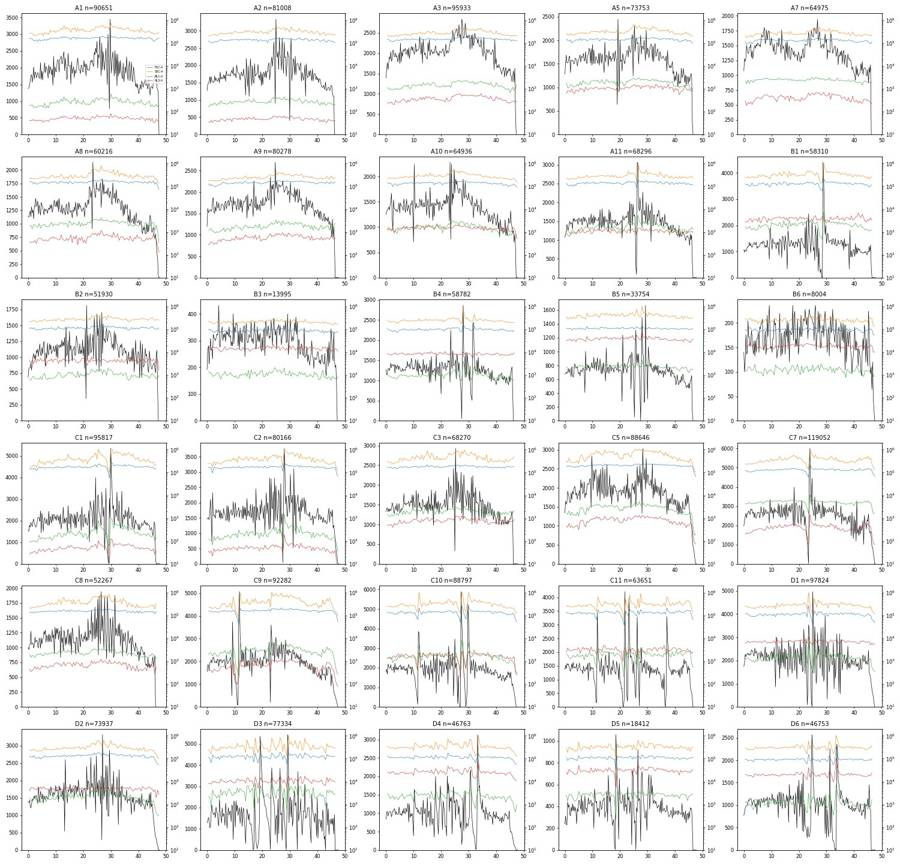
16
tool call · Bash
cd /task/work; cat > ex4.py <<'EOF'
from load import *
import matplotlib; matplotlib.use('Agg'); import matplotlib.pyplot as plt
D=load()
wells=['A1','A3','A7','A10','B4','B5','C1','C7','D3','D6']
fig,axs=plt.subplots(4,len(wells),figsize=(4*len(wells),16))
for j,w in enumerate(wells):
df=D[w]
axs[0,j].hist2d(df['FSC-A'],df['SSC-A'],bins=200,range=[[0,1.05e6],[0,1.05e6]],norm=matplotlib.colors.LogNorm(),cmap='jet'); axs[0,j].set_title(w+' FSC-A vs SSC-A')
axs[1,j].hist2d(df['FSC-A'],df['SSC-A'],bins=200,range=[[0,4e5],[0,6e5]],norm=matplotlib.colors.LogNorm(),cmap='jet'); axs[1,j].set_title('zoom')
axs[2,j].hist2d(df['SSC-H'],df['SSC-A'],bins=200,range=[[0,1.05e6],[0,1.05e6]],norm=matplotlib.colors.LogNorm(),cmap='jet'); axs[2,j].set_title('SSC-H vs SSC-A')
axs[3,j].hist2d(df['FSC-H'],df['FSC-A'],bins=200,range=[[0,1.05e6],[0,1.05e6]],norm=matplotlib.colors.LogNorm(),cmap='jet'); axs[3,j].set_title('FSC-H vs FSC-A')
plt.tight_layout(); plt.savefig('scatter.png',dpi=50)
EOF
python ex4.py17
tool call · Read
{
"file_path": "/task/work/scatter.png"
}18
tool output
(Bash completed with no output)
19
tool output
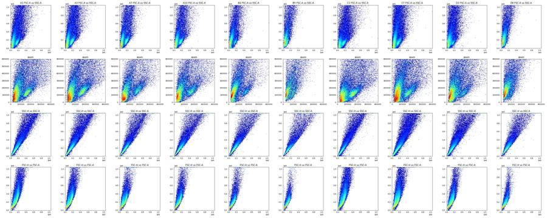
21
tool call · Bash
cd /task/work; cat > ex5.py <<'EOF'
from load import *
import matplotlib; matplotlib.use('Agg'); import matplotlib.pyplot as plt
from matplotlib.colors import LogNorm
D=load()
wells=['A1','A7','A9','B2','B4','C7','C10','D6']
fig,axs=plt.subplots(2,4,figsize=(28,14))
for ax,w in zip(axs.flat,wells):
df=D[w]
ax.hist2d(df['FSC-A'],df['SSC-A'],bins=250,range=[[0,5e5],[0,8e5]],norm=LogNorm(),cmap='jet'); ax.set_title(w)
ax.grid(alpha=.3)
plt.tight_layout(); plt.savefig('scatter2.png',dpi=55)
# backgating: fluor by scatter region
fig,axs=plt.subplots(3,4,figsize=(28,20))
def al(x): return np.arcsinh(x/150)
for j,w in enumerate(['A7','A10','B4','C7']):
df=D[w]
lo=df[(df['FSC-A']<90000)&(df['SSC-A']<1e6)]; hi=df[(df['FSC-A']>=110000)&(df['SSC-A']<4e5)]
for i,(nm,sub) in enumerate([('all',df),('lowFSC',lo),('cluster',hi)]):
axs[i,j].hist2d(al(sub['RL3-A']),al(sub['BL1-A']),bins=200,range=[[-3,10],[-3,10]],norm=LogNorm(),cmap='jet'); axs[i,j].set_title(f'{w} {nm} n={len(sub)} RL3(x) vs BL1(y) asinh/150')
plt.tight_layout(); plt.savefig('fluor_by_scatter.png',dpi=50)
EOF
python ex5.py22
tool call · Read
{
"file_path": "/task/work/scatter2.png"
}23
tool call · Read
{
"file_path": "/task/work/fluor_by_scatter.png"
}24
tool output
(Bash completed with no output)
25
tool output
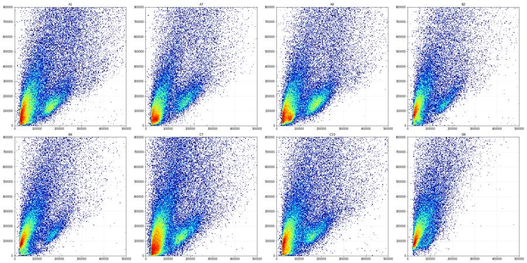
26
tool output
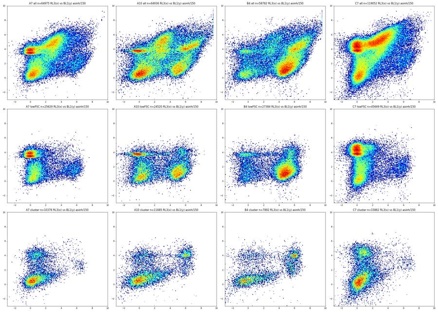
28
tool call · Bash
cd /task/work; cat > ex6.py <<'EOF'
from load import *
import matplotlib; matplotlib.use('Agg'); import matplotlib.pyplot as plt
from matplotlib.colors import LogNorm
D=load()
def al(x): return np.arcsinh(x/150)
fig,axs=plt.subplots(6,5,figsize=(30,30))
bins=np.linspace(-2,10,241)
for ax,(w,df) in zip(axs.flat,D.items()):
sub=df[(df['FSC-A']>=110000)&(df['FSC-A']<320000)&(df['SSC-A']<4e5)]
r=lay.set_index('well').loc[w]
ax.hist(al(sub['RL3-A']),bins=bins,histtype='step',color='r',label='RL3')
ax.hist(al(sub['BL1-A']),bins=bins,histtype='step',color='g',label='BL1')
ax.set_title(f'{w} {r.genotype} {r.treatment} {r.stain} n={len(sub)}'); ax.set_yscale('log')
for v in [1000,3000,10000]: ax.axvline(al(v),color='gray',lw=.5)
plt.tight_layout(); plt.savefig('fl_hist.png',dpi=45)
fig,axs=plt.subplots(6,5,figsize=(30,30))
for ax,(w,df) in zip(axs.flat,D.items()):
sub=df[(df['FSC-A']>=110000)&(df['FSC-A']<320000)&(df['SSC-A']<4e5)]
r=lay.set_index('well').loc[w]
ax.hist2d(al(sub['RL3-A']),al(sub['BL1-A']),bins=150,range=[[-2,10],[-2,10]],norm=LogNorm(),cmap='jet')
ax.set_title(f'{w} {r.genotype} {r.treatment} {r.stain} n={len(sub)}')
for v in [1000,3000,10000]: ax.axvline(al(v),color='gray',lw=.5); ax.axhline(al(v),color='gray',lw=.5)
plt.tight_layout(); plt.savefig('fl_2d.png',dpi=45)
EOF
python ex6.py29
tool call · Read
{
"file_path": "/task/work/fl_2d.png"
}30
tool output
(Bash completed with no output)
31
tool output
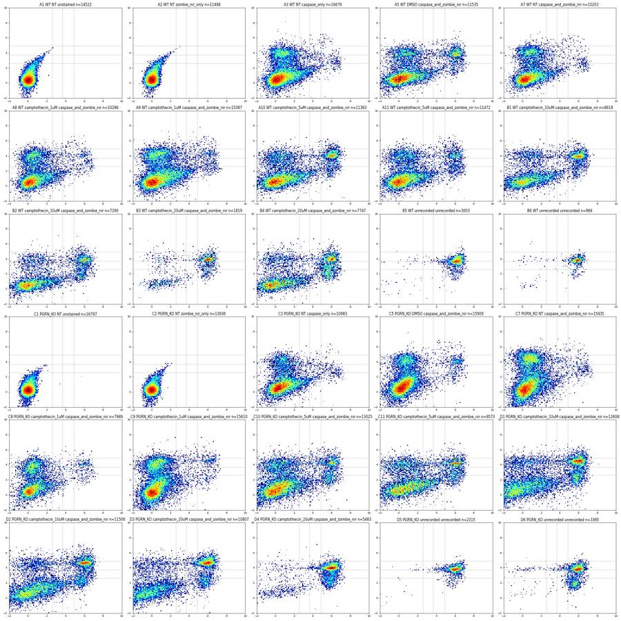
33
agent
Status: data explored; staining-control anomalies and flow instabilities identified. Now building the gates (Cells ellipse first), then QC and outputs.
34
tool call · Bash
cd /task/work; cat > ex7.py <<'EOF'
from load import *
import matplotlib; matplotlib.use('Agg'); import matplotlib.pyplot as plt
from matplotlib.colors import LogNorm
import sys
D=load()
cx,cy,a,b,ang=[float(x) for x in sys.argv[1:6]]
th=np.deg2rad(ang)
R=np.array([[np.cos(th),-np.sin(th)],[np.sin(th),np.cos(th)]])
cov=R@np.diag([a*a,b*b])@R.T
t=np.linspace(0,2*np.pi,200)
el=np.array([cx,cy])[:,None]+R@np.array([a*np.cos(t),b*np.sin(t)])
wells=['A1','A3','A7','A10','B2','B4','B5','C1','C5','C7','C10','D3','D4','D6','B3','A9']
fig,axs=plt.subplots(4,4,figsize=(28,28))
ci=np.linalg.inv(cov)
for ax,w in zip(axs.flat,wells):
df=D[w]
ax.hist2d(df['FSC-A'],df['SSC-A'],bins=200,range=[[0,4.5e5],[0,6e5]],norm=LogNorm(),cmap='jet')
ax.plot(el[0],el[1],'k-',lw=2)
d=np.c_[df['FSC-A']-cx,df['SSC-A']-cy]; m=np.einsum('ij,jk,ik->i',d,ci,d)<=1
ax.set_title(f'{w} in={m.sum()} ({m.mean()*100:.1f}%)'); ax.grid(alpha=.3)
plt.tight_layout(); plt.savefig('ell.png',dpi=45)
print(cov)
EOF
python ex7.py 190000 165000 130000 48000 5035
tool call · Read
{
"file_path": "/task/work/ell.png"
}36
tool output
[[8.33471560e+09 7.18712698e+09] [7.18712698e+09 1.08692844e+10]]
37
tool output
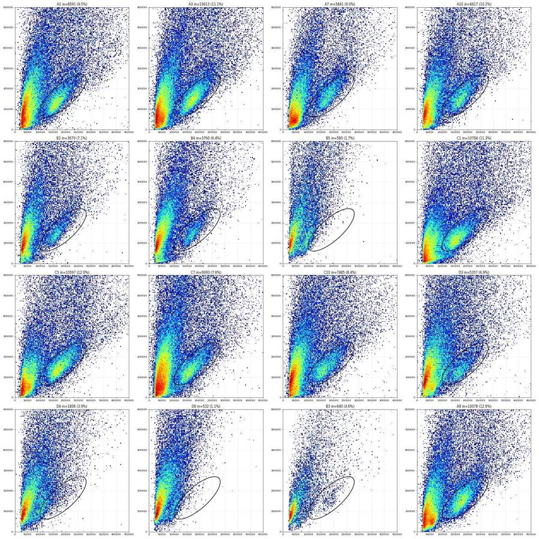
39
tool call · Bash
cd /task/work; python ex7.py 185000 162000 132000 55000 50
40
tool call · Read
{
"file_path": "/task/work/ell.png"
}41
tool output
[[8.97431994e+09 7.09012342e+09] [7.09012342e+09 1.14746801e+10]]
42
tool output
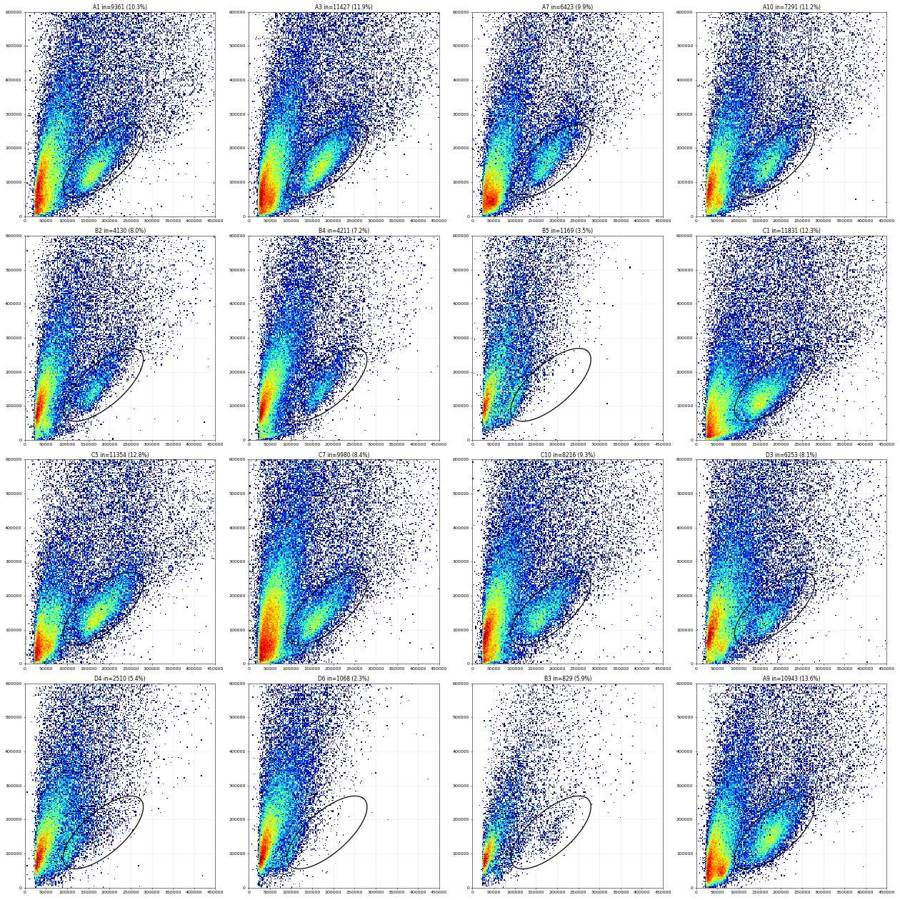
44
tool call · Bash
cd /task/work; cat > gates_def.py <<'EOF'
import numpy as np
CX,CY,A,B,ANG=185000.,162000.,132000.,55000.,50.
th=np.deg2rad(ANG)
R=np.array([[np.cos(th),-np.sin(th)],[np.sin(th),np.cos(th)]])
COV=R@np.diag([A*A,B*B])@R.T
def in_cells(df):
d=np.c_[df['FSC-A']-CX,df['SSC-A']-CY]
return np.einsum('ij,jk,ik->i',d,np.linalg.inv(COV),d)<=1
EOF
cat > ex8.py <<'EOF'
from load import *; from gates_def import *
import matplotlib; matplotlib.use('Agg'); import matplotlib.pyplot as plt
from matplotlib.colors import LogNorm
D=load()
wells=['A1','A7','A10','B4','C1','C7','C10','D3']
fig,axs=plt.subplots(2,4,figsize=(28,14))
allr=[]
for ax,w in zip(axs.flat,wells):
df=D[w]; c=df[in_cells(df)]
ax.hist2d(c['SSC-H'],c['SSC-A'],bins=200,range=[[0,3.5e5],[0,3.5e5]],norm=LogNorm(),cmap='jet'); ax.set_title(w); ax.grid(alpha=.3)
plt.tight_layout(); plt.savefig('sing.png',dpi=45)
for w,df in D.items():
c=df[in_cells(df)]; r=c['SSC-A']/c['SSC-H']
print(w, len(c), np.round(np.percentile(r,[0.5,1,2.5,5,25,50,75,90,95,97.5,99]),3), 'SSC-H range', c['SSC-H'].min(), c['SSC-H'].max())
EOF
python ex8.py45
tool call · Read
{
"file_path": "/task/work/sing.png"
}46
tool output
A1 9361 [0.729 0.801 0.905 0.967 1.102 1.162 1.239 1.358 1.467 1.618 1.825] SSC-H range 25306.0 447429.0 A2 6941 [0.748 0.831 0.931 1.01 1.113 1.175 1.261 1.391 1.494 1.626 1.782] SSC-H range 28831.0 362063.0 A3 11427 [0.774 0.859 0.95 1.008 1.115 1.171 1.241 1.337 1.426 1.535 1.753] SSC-H range 24890.0 260429.0 A5 7048 [0.777 0.846 0.934 1.003 1.115 1.17 1.239 1.339 1.45 1.595 1.88 ] SSC-H range 34975.0 266732.0 A7 6423 [0.826 0.899 0.989 1.045 1.13 1.183 1.253 1.351 1.455 1.564 1.808] SSC-H range 32272.0 264790.0 A8 7350 [0.819 0.893 0.971 1.024 1.113 1.16 1.222 1.308 1.394 1.483 1.705] SSC-H range 37880.0 250797.0 A9 10943 [0.806 0.888 0.964 1.016 1.108 1.16 1.221 1.31 1.4 1.529 1.755] SSC-H range 35836.0 294139.0 A10 7291 [0.822 0.883 0.976 1.031 1.117 1.169 1.234 1.331 1.426 1.561 1.804] SSC-H range 27739.0 331721.0 A11 7627 [0.812 0.873 0.958 1.023 1.113 1.168 1.243 1.335 1.42 1.562 1.771] SSC-H range 28488.0 284125.0 B1 5032 [0.743 0.843 0.939 1.016 1.111 1.165 1.237 1.344 1.47 1.645 1.874] SSC-H range 21351.0 317896.0 B2 4130 [0.777 0.825 0.966 1.03 1.111 1.161 1.233 1.34 1.437 1.589 1.827] SSC-H range 38929.0 344023.0 B3 829 [1.042 1.055 1.064 1.078 1.132 1.19 1.281 1.458 1.633 1.758 1.924] SSC-H range 42403.0 214439.0 B4 4211 [0.775 0.848 0.972 1.026 1.109 1.159 1.224 1.327 1.429 1.548 1.821] SSC-H range 32011.0 388049.0 B5 1169 [0.683 0.807 0.948 1.044 1.132 1.238 1.392 1.624 1.768 1.877 2.017] SSC-H range 47010.0 195689.0 B6 341 [1.025 1.038 1.056 1.061 1.119 1.174 1.275 1.515 1.633 1.753 1.959] SSC-H range 43028.0 205211.0 C1 11831 [0.693 0.753 0.846 0.928 1.09 1.157 1.242 1.38 1.512 1.666 1.888] SSC-H range 23049.0 437064.0 C2 9908 [0.702 0.791 0.879 0.953 1.101 1.16 1.239 1.369 1.491 1.631 1.833] SSC-H range 15380.0 434634.0 C3 7644 [0.758 0.816 0.911 0.991 1.107 1.167 1.237 1.33 1.423 1.536 1.707] SSC-H range 20258.0 286043.0 C5 11354 [0.697 0.772 0.87 0.951 1.104 1.166 1.234 1.317 1.389 1.482 1.67 ] SSC-H range 31055.0 553802.0 C7 9980 [0.678 0.751 0.842 0.918 1.084 1.155 1.237 1.361 1.475 1.626 1.876] SSC-H range 24343.0 470581.0 C8 5729 [0.731 0.795 0.905 0.986 1.1 1.152 1.221 1.338 1.444 1.553 1.763] SSC-H range 27876.0 333370.0 C9 11604 [0.701 0.76 0.847 0.921 1.086 1.144 1.213 1.312 1.416 1.554 1.773] SSC-H range 20024.0 421457.0 C10 8216 [0.647 0.762 0.883 0.962 1.1 1.162 1.234 1.341 1.437 1.568 1.795] SSC-H range 33550.0 524857.0 C11 5738 [0.706 0.801 0.902 0.986 1.114 1.172 1.248 1.36 1.469 1.609 1.821] SSC-H range 29862.0 290196.0 D1 6924 [0.657 0.76 0.876 0.962 1.103 1.172 1.265 1.413 1.571 1.775 2.007] SSC-H range 11450.0 414589.0 D2 6857 [0.742 0.815 0.909 0.99 1.109 1.168 1.243 1.356 1.474 1.612 1.863] SSC-H range 27017.0 340833.0 D3 6253 [0.693 0.755 0.866 0.951 1.092 1.156 1.239 1.392 1.559 1.753 1.98 ] SSC-H range 22684.0 388672.0 D4 2510 [0.787 0.877 0.999 1.041 1.128 1.214 1.359 1.577 1.759 2.021 2.322] SSC-H range 35090.0 353472.0 D5 884 [0.831 0.916 1.028 1.055 1.127 1.217 1.366 1.561 1.746 1.928 2.08 ] SSC-H range 48903.0 297255.0 D6 1068 [0.491 0.66 0.842 0.981 1.093 1.158 1.277 1.487 1.602 1.71 1.895] SSC-H range 43393.0 418224.0
47
tool output
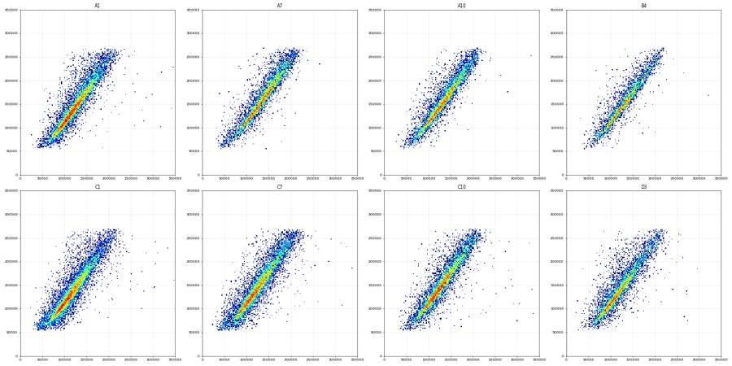
49
tool call · Bash
cd /task/work; cat >> gates_def.py <<'EOF'
SING=np.array([(30000,25500),(30000,44000),(300000,420000),(300000,255000)],float)
from matplotlib.path import Path
def in_sing(df):
return Path(SING).contains_points(np.c_[df['SSC-H'],df['SSC-A']])
EOF
cat > ex9.py <<'EOF'
from load import *; from gates_def import *
import matplotlib; matplotlib.use('Agg'); import matplotlib.pyplot as plt
D=load()
def al(x): return np.arcsinh(x/150)
S={w:df[in_cells(df)&in_sing(df)] for w,df in D.items()}
for w in S: print(w, len(D[w]), in_cells(D[w]).sum(), len(S[w]), round(len(S[w])/in_cells(D[w]).sum()*100,1))
bins=np.linspace(-2,9,111)
fig,axs=plt.subplots(2,3,figsize=(27,14))
groups={'unst A1 C1 A2 C2':['A1','C1','A2','C2'],'casp-only A3 C3':['A3','C3'],'NT/DMSO both':['A5','A7','C5','C7'],'CPT 1-5':['A8','A9','A10','A11','C8','C9','C10','C11'],'CPT 10-20':['B1','B2','B3','B4','D1','D2','D3','D4'],'unrec':['B5','B6','D5','D6']}
for ax,(g,ws) in zip(axs.flat,groups.items()):
for w in ws:
ax.hist(al(S[w]['RL3-A']),bins=bins,histtype='step',label=w)
ax.set_yscale('log'); ax.legend(); ax.set_title(g+' RL3 singlets')
ax.set_xticks(al(np.array([0,300,1000,2000,3000,5000,10000,30000,100000]))); ax.set_xticklabels(['0','300','1k','2k','3k','5k','10k','30k','100k']); ax.grid(alpha=.4)
plt.tight_layout(); plt.savefig('rl3_hist.png',dpi=50)
# pooled histogram valley
pool=np.concatenate([al(S[w]['RL3-A']) for w in S if w not in ['A1','A2','C1','C2']])
h,e=np.histogram(pool,bins=np.linspace(-2,9,111))
for a,b in zip(e[:-1],h): print(f'{a:.1f} {150*np.sinh(a):9.0f} {b}')
for w in ['A1','A2','C1','C2']: print(w, np.percentile(S[w]['RL3-A'],[50,95,99,99.5,99.9,100]).round())
EOF
python ex9.py50
tool output
A1 90651 9361 8561 91.5 A2 81008 6941 6266 90.3 A3 95933 11427 10701 93.6 A5 73753 7048 6542 92.8 A7 64975 6423 5955 92.7 A8 60216 7350 6982 95.0 A9 80278 10943 10344 94.5 A10 64936 7291 6846 93.9 A11 68296 7627 7163 93.9 B1 58310 5032 4646 92.3 B2 51930 4130 3840 93.0 B3 13995 829 722 87.1 B4 58782 4211 3944 93.7 B5 33754 1169 890 76.1 B6 8004 341 290 85.0 C1 95817 11831 10557 89.2 C2 80166 9908 8956 90.4 C3 68270 7644 7134 93.3 C5 88646 11354 10633 93.6 C7 119052 9980 9009 90.3 C8 52267 5729 5305 92.6 C9 92282 11604 10710 92.3 C10 88797 8216 7574 92.2 C11 63651 5738 5245 91.4 D1 97824 6924 6090 88.0 D2 73937 6857 6284 91.6 D3 77334 6253 5542 88.6 D4 46763 2510 2002 79.8 D5 18412 884 701 79.3 D6 46753 1068 887 83.1 -2.0 -544 396 -1.9 -490 415 -1.8 -441 530 -1.7 -397 589 -1.6 -356 651 -1.5 -319 802 -1.4 -286 862 -1.3 -255 1047 -1.2 -226 1155 -1.1 -200 1460 -1.0 -176 1804 -0.9 -154 1923 -0.8 -133 2584 -0.7 -114 2971 -0.6 -95 3417 -0.5 -78 4329 -0.4 -62 4833 -0.3 -46 5222 -0.2 -30 5840 -0.1 -15 6358 0.0 0 6926 0.1 15 6628 0.2 30 6503 0.3 46 6394 0.4 62 6293 0.5 78 5349 0.6 95 4903 0.7 114 4576 0.8 133 3755 0.9 154 3609 1.0 176 3049 1.1 200 2700 1.2 226 2305 1.3 255 2129 1.4 286 1795 1.5 319 1790 1.6 356 1513 1.7 397 1431 1.8 441 1281 1.9 490 1235 2.0 544 1131 2.1 603 1039 2.2 669 984 2.3 741 896 2.4 820 857 2.5 908 794 2.6 1004 749 2.7 1111 654 2.8 1229 601 2.9 1359 520 3.0 1503 469 3.1 1661 439 3.2 1837 413 3.3 2031 344 3.4 2245 303 3.5 2481 269 3.6 2743 278 3.7 3032 230 3.8 3351 198 3.9 3704 190 4.0 4093 181 4.1 4524 169 4.2 5000 159 4.3 5526 146 4.4 6108 145 4.5 6750 152 4.6 7461 169 4.7 8245 168 4.8 9113 197 4.9 10071 220 5.0 11130 293 5.1 12301 324 5.2 13595 412 5.3 15025 576 5.4 16605 749 5.5 18352 922 5.6 20282 1044 5.7 22415 1008 5.8 24772 1034 5.9 27378 875 6.0 30257 735 6.1 33439 565 6.2 36956 397 6.3 40843 288 6.4 45138 181 6.5 49886 106 6.6 55132 55 6.7 60930 25 6.8 67338 10 6.9 74421 7 7.0 82247 5 7.1 90897 0 7.2 100457 0 7.3 111022 0 7.4 122699 0 7.5 135603 0 7.6 149865 0 7.7 165626 0 7.8 183045 0 7.9 202296 0 8.0 223572 0 8.1 247085 0 8.2 273071 0 8.3 301790 0 8.4 333530 0 8.5 368608 0 8.6 407374 0 8.7 450218 0 8.8 497568 0 8.9 549898 0 A1 [6.0000e+00 9.4000e+01 1.4000e+02 1.6400e+02 3.3800e+02 2.7492e+04] A2 [ 6. 93. 135. 161. 269. 705.] C1 [ 2. 88. 127. 147. 172. 614.] C2 [ 2. 91. 129. 143. 184. 521.]
52
tool call · Read
{
"file_path": "/task/work/rl3_hist.png"
}53
tool output
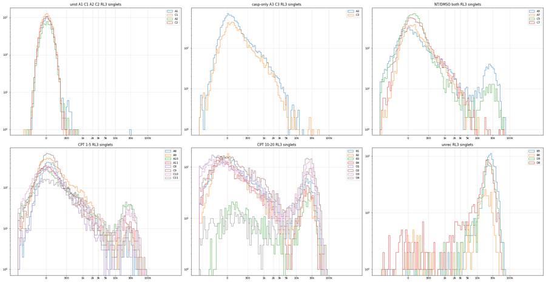
55
tool call · Bash
cd /task/work; cat > ex10.py <<'EOF'
from load import *; from gates_def import *
import matplotlib; matplotlib.use('Agg'); import matplotlib.pyplot as plt
D=load()
def al(x): return np.arcsinh(x/150)
S={w:df[in_cells(df)&in_sing(df)] for w,df in D.items()}
for w in S:
s=S[w]; r=s['RL3-A']
print(w.ljust(4), len(s), 'RL3<-1000: %d <-2000: %d <-3000: %d | 3000-6000: %d 6000-10000: %d >10000: %d | SSC range %d-%d'%((r<-1000).sum(),(r<-2000).sum(),(r<-3000).sum(),((r>3000)&(r<6000)).sum(),((r>=6000)&(r<10000)).sum(),(r>=10000).sum(), s['SSC-A'].min(), s['SSC-A'].max()))
L={w:s[(s['RL3-A']<6000)] for w,s in S.items()}
bins=np.linspace(-2,9,111)
fig,axs=plt.subplots(2,3,figsize=(27,14))
groups={'unst A1 C1 A2 C2':['A1','C1','A2','C2'],'casp-only A3 C3':['A3','C3'],'NT/DMSO both':['A5','A7','C5','C7'],'CPT 1-5':['A8','A9','A10','A11','C8','C9','C10','C11'],'CPT 10-20':['B1','B2','B3','B4','D1','D2','D3','D4'],'unrec':['B5','B6','D5','D6']}
for ax,(g,ws) in zip(axs.flat,groups.items()):
for w in ws:
ax.hist(al(L[w]['BL1-A']),bins=bins,histtype='step',label=w)
ax.set_yscale('log'); ax.legend(); ax.set_title(g+' BL1 in Live')
ax.set_xticks(al(np.array([0,300,1000,2000,3000,5000,10000,30000,100000]))); ax.set_xticklabels(['0','300','1k','2k','3k','5k','10k','30k','100k']); ax.grid(alpha=.4)
plt.tight_layout(); plt.savefig('bl1_hist.png',dpi=50)
pool=np.concatenate([al(L[w]['BL1-A']) for w in L if w not in ['A1','A2','C1','C2']])
h,e=np.histogram(pool,bins=np.linspace(-2,9,111))
for a,b in zip(e[:-1],h):
if 1.5<a<6: print(f'{a:.1f} {150*np.sinh(a):9.0f} {b}')
for w in ['A1','A2','C1','C2']: print(w, len(L[w]), np.percentile(L[w]['BL1-A'],[50,95,99,99.5,99.9,100]).round(), [(L[w]['BL1-A']>t).sum() for t in (1000,1500,2000,3000)])
EOF
python ex10.py56
tool call · Read
{
"file_path": "/task/work/bl1_hist.png"
}57
tool output
A1 8561 RL3<-1000: 0 <-2000: 0 <-3000: 0 | 3000-6000: 0 6000-10000: 0 >10000: 1 | SSC range 56248-268345 A2 6266 RL3<-1000: 0 <-2000: 0 <-3000: 0 | 3000-6000: 0 6000-10000: 0 >10000: 0 | SSC range 56060-268465 A3 10701 RL3<-1000: 0 <-2000: 0 <-3000: 0 | 3000-6000: 56 6000-10000: 11 >10000: 6 | SSC range 55082-268541 A5 6542 RL3<-1000: 27 <-2000: 15 <-3000: 9 | 3000-6000: 46 6000-10000: 29 >10000: 370 | SSC range 55758-268482 A7 5955 RL3<-1000: 0 <-2000: 0 <-3000: 0 | 3000-6000: 28 6000-10000: 6 >10000: 4 | SSC range 55465-267760 A8 6982 RL3<-1000: 0 <-2000: 0 <-3000: 0 | 3000-6000: 41 6000-10000: 16 >10000: 65 | SSC range 55055-267694 A9 10344 RL3<-1000: 1 <-2000: 0 <-3000: 0 | 3000-6000: 91 6000-10000: 23 >10000: 75 | SSC range 55403-268967 A10 6846 RL3<-1000: 34 <-2000: 17 <-3000: 9 | 3000-6000: 66 6000-10000: 40 >10000: 408 | SSC range 55147-268679 A11 7163 RL3<-1000: 13 <-2000: 4 <-3000: 3 | 3000-6000: 53 6000-10000: 32 >10000: 183 | SSC range 55679-268807 B1 4646 RL3<-1000: 71 <-2000: 29 <-3000: 20 | 3000-6000: 59 6000-10000: 33 >10000: 512 | SSC range 55118-268866 B2 3840 RL3<-1000: 10 <-2000: 4 <-3000: 1 | 3000-6000: 48 6000-10000: 27 >10000: 284 | SSC range 55773-268623 B3 722 RL3<-1000: 0 <-2000: 0 <-3000: 0 | 3000-6000: 18 6000-10000: 17 >10000: 265 | SSC range 60016-262474 B4 3944 RL3<-1000: 21 <-2000: 7 <-3000: 4 | 3000-6000: 32 6000-10000: 22 >10000: 335 | SSC range 55775-268014 B5 890 RL3<-1000: 1 <-2000: 0 <-3000: 0 | 3000-6000: 21 6000-10000: 28 >10000: 810 | SSC range 65451-263345 B6 290 RL3<-1000: 0 <-2000: 0 <-3000: 0 | 3000-6000: 16 6000-10000: 18 >10000: 205 | SSC range 63604-252690 C1 10557 RL3<-1000: 0 <-2000: 0 <-3000: 0 | 3000-6000: 0 6000-10000: 0 >10000: 0 | SSC range 55064-268967 C2 8956 RL3<-1000: 0 <-2000: 0 <-3000: 0 | 3000-6000: 0 6000-10000: 0 >10000: 0 | SSC range 55268-268809 C3 7134 RL3<-1000: 4 <-2000: 2 <-3000: 1 | 3000-6000: 29 6000-10000: 8 >10000: 7 | SSC range 55464-268109 C5 10633 RL3<-1000: 16 <-2000: 3 <-3000: 1 | 3000-6000: 29 6000-10000: 17 >10000: 126 | SSC range 56086-268490 C7 9009 RL3<-1000: 10 <-2000: 3 <-3000: 1 | 3000-6000: 40 6000-10000: 9 >10000: 6 | SSC range 55395-268735 C8 5305 RL3<-1000: 8 <-2000: 1 <-3000: 1 | 3000-6000: 21 6000-10000: 7 >10000: 61 | SSC range 55053-267321 C9 10710 RL3<-1000: 16 <-2000: 6 <-3000: 2 | 3000-6000: 42 6000-10000: 16 >10000: 95 | SSC range 54953-268005 C10 7574 RL3<-1000: 41 <-2000: 10 <-3000: 3 | 3000-6000: 89 6000-10000: 29 >10000: 274 | SSC range 55665-268542 C11 5245 RL3<-1000: 41 <-2000: 10 <-3000: 7 | 3000-6000: 94 6000-10000: 41 >10000: 352 | SSC range 56798-268076 D1 6090 RL3<-1000: 132 <-2000: 37 <-3000: 21 | 3000-6000: 72 6000-10000: 69 >10000: 743 | SSC range 56810-268805 D2 6284 RL3<-1000: 52 <-2000: 15 <-3000: 8 | 3000-6000: 105 6000-10000: 85 >10000: 887 | SSC range 55608-268942 D3 5542 RL3<-1000: 183 <-2000: 40 <-3000: 20 | 3000-6000: 69 6000-10000: 97 >10000: 1067 | SSC range 56406-268888 D4 2002 RL3<-1000: 11 <-2000: 3 <-3000: 3 | 3000-6000: 46 6000-10000: 70 >10000: 1430 | SSC range 57109-263957 D5 701 RL3<-1000: 0 <-2000: 0 <-3000: 0 | 3000-6000: 26 6000-10000: 29 >10000: 627 | SSC range 60848-242983 D6 887 RL3<-1000: 3 <-2000: 2 <-3000: 2 | 3000-6000: 46 6000-10000: 55 >10000: 654 | SSC range 58378-241158 1.6 356 1702 1.7 397 1413 1.8 441 1151 1.9 490 918 2.0 544 747 2.1 603 621 2.2 669 564 2.3 741 509 2.4 820 496 2.5 908 478 2.6 1004 487 2.7 1111 499 2.8 1229 494 2.9 1359 558 3.0 1503 591 3.1 1661 617 3.2 1837 675 3.3 2031 727 3.4 2245 811 3.5 2481 976 3.6 2743 991 3.7 3032 1162 3.8 3351 1120 3.9 3704 1037 4.0 4093 994 4.1 4524 973 4.2 5000 881 4.3 5526 860 4.4 6108 758 4.5 6750 669 4.6 7461 524 4.7 8245 391 4.8 9113 344 4.9 10071 272 5.0 11130 226 5.1 12301 165 5.2 13595 139 5.3 15025 72 5.4 16605 55 5.5 18352 33 5.6 20282 27 5.7 22415 11 5.8 24772 14 5.9 27378 12 A1 8560 [ 48. 192. 588. 1156. 2614. 3786.] [52, 27, 17, 5] A2 6266 [ 54. 200. 528. 931. 2212. 4889.] [29, 20, 11, 2] C1 10557 [ 32. 143. 294. 423. 705. 1824.] [6, 1, 0, 0] C2 8956 [ 36. 142. 251. 349. 717. 2547.] [7, 3, 2, 0]
58
tool output
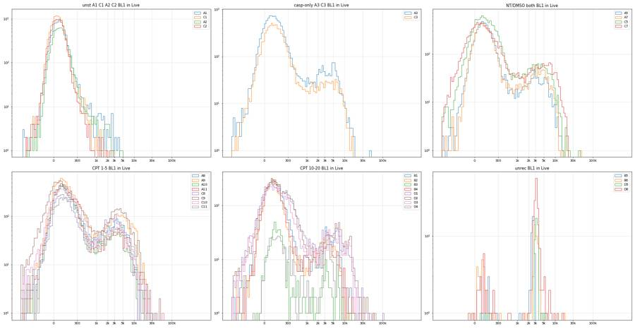
60
agent
Gate boundaries are chosen (Cells ellipse, singlet polygon, RL3 < ~6000 for Live, BL1 > ~1200 for Caspase_pos). Building the FlowKit strategy and saving outputs now, then QC.
61
tool call · Bash
cd /task/work; cat > build.py <<'EOF'
import flowkit as fk, numpy as np, pandas as pd, os
from flowkit import Dimension, GatingStrategy
from flowkit.gates import RectangleGate, PolygonGate, EllipsoidGate
from gates_def import CX,CY,COV,SING
lay=pd.read_csv('/task/inputs/plate_layout.csv')
RL3_MIN,RL3_MAX=-10000.,6000.
BL1_MIN,BL1_MAX=1200.,1000000.
SSC_MIN,SSC_MAX=30000.,300000.
U='uncompensated'
gs=GatingStrategy()
gs.add_gate(EllipsoidGate('Cells',[Dimension('FSC-A',compensation_ref=U),Dimension('SSC-A',compensation_ref=U)],
coordinates=[CX,CY],covariance_matrix=COV.tolist(),distance_square=1.0),gate_path=('root',))
gs.add_gate(PolygonGate('Single_Cells',[Dimension('SSC-H',compensation_ref=U),Dimension('SSC-A',compensation_ref=U)],
vertices=SING.tolist()),gate_path=('root','Cells'))
gs.add_gate(RectangleGate('Live',[Dimension('RL3-A',compensation_ref=U,range_min=RL3_MIN,range_max=RL3_MAX),
Dimension('SSC-A',compensation_ref=U,range_min=SSC_MIN,range_max=SSC_MAX)]),gate_path=('root','Cells','Single_Cells'))
gs.add_gate(RectangleGate('Caspase_pos',[Dimension('BL1-A',compensation_ref=U,range_min=BL1_MIN,range_max=BL1_MAX),
Dimension('SSC-A',compensation_ref=U,range_min=SSC_MIN,range_max=SSC_MAX)]),gate_path=('root','Cells','Single_Cells','Live'))
os.makedirs('/task/outputs',exist_ok=True)
with open('/task/outputs/gates.xml','wb') as f: fk.export_gatingml(gs,f)
gs2=fk.parse_gating_xml('/task/outputs/gates.xml')
print(gs2.get_gate_ids())
pops=[('Cells','all_events'),('Single_Cells','Cells'),('Live','Single_Cells'),('Caspase_pos','Live')]
rows=[];memb={}
for f,w in zip(lay.file,lay.well):
s=fk.Sample('/task/inputs/raw/'+f)
res=gs2.gate_sample(s)
cnt={'all_events':s.event_count}
for p,par in pops:
m=res.get_gate_membership(p); cnt[p]=int(m.sum()); memb[(w,p)]=m
# hierarchical consistency check
for p,par in pops:
rows.append(dict(file=f,well=w,population=p,count=cnt[p],parent_population=par,pct_of_parent=round(100*cnt[p]/cnt[par],4) if cnt[par] else 0.0))
c=pd.DataFrame(rows)
c.to_csv('/task/outputs/counts.csv',index=False)
import pickle; pickle.dump(memb,open('memb.pkl','wb'))
pd.set_option('display.width',200)
print(c.pivot(index='well',columns='population',values='count').loc[lay.well,[p for p,_ in pops]].join(c.pivot(index='well',columns='population',values='pct_of_parent').loc[lay.well,[p for p,_ in pops]],rsuffix='_pct').join(lay.set_index('well')[['genotype','treatment','stain']]).to_string())
EOF
python build.py; head -c 3000 /task/outputs/gates.xml62
tool output (error)
Exit code 1
Traceback (most recent call last):
File "/task/work/build.py", line 3, in <module>
from flowkit.gates import RectangleGate, PolygonGate, EllipsoidGate
ModuleNotFoundError: No module named 'flowkit.gates'
head: cannot open '/task/outputs/gates.xml' for reading: No such file or directory63
tool call · Bash
cd /task/work; python -c "
import flowkit as fk; print(fk.__version__, [x for x in dir(fk) if not x.startswith('_')]); print(dir(fk.gates))
import inspect; print(inspect.signature(fk.gates.EllipsoidGate.__init__)); print(inspect.signature(fk.GatingStrategy.add_gate)); print(inspect.signature(fk.Dimension.__init__)); print(inspect.signature(fk.GatingStrategy.gate_sample))"64
tool output
1.2.3 ['Dimension', 'GatingStrategy', 'Matrix', 'QuadrantDivider', 'RatioDimension', 'Sample', 'Session', 'Workspace', 'exceptions', 'export_gatingml', 'extract_wsp_sample_data', 'gates', 'generate_transforms', 'load_samples', 'parse_gating_xml', 'parse_wsp', 'read_multi_dataset_fcs', 'transforms'] ['BooleanGate', 'EllipsoidGate', 'PolygonGate', 'Quadrant', 'QuadrantGate', 'RectangleGate', '__all__', '__builtins__', '__cached__', '__doc__', '__file__', '__loader__', '__name__', '__package__', '__path__', '__spec__', '_base_gate', '_gates', '_gml_gates', '_wsp_gates'] (self, gate_name, dimensions, coordinates, covariance_matrix, distance_square) (self, gate, gate_path, sample_id=None) (self, dimension_id, compensation_ref='uncompensated', transformation_ref=None, range_min=None, range_max=None) (self, sample, cache_events=False, verbose=False)
66
tool call · Bash
cd /task/work; ls; python -c " import flowkit as fk; print(fk.__file__, fk.gates.__file__) from flowkit.gates import RectangleGate"
67
tool output (error)
Exit code 1 __pycache__ bl1_hist.png build.py data.pkl ell.png ex10.py ex2.py ex3.py ex4.py ex5.py ex6.py ex7.py ex8.py ex9.py explore.py fl_2d.png fl_hist.png fluor_by_scatter.png gates_def.py load.py rl3_hist.png scatter.png scatter2.png sing.png time.png Traceback (most recent call last): File "<string>", line 3, in <module> ModuleNotFoundError: No module named 'flowkit.gates' /usr/local/lib/python3.12/site-packages/flowkit/__init__.py /usr/local/lib/python3.12/site-packages/flowkit/_models/gates/__init__.py
69
tool call · Bash
cd /task/work; sed -i 's/^from flowkit.gates import RectangleGate, PolygonGate, EllipsoidGate/RectangleGate, PolygonGate, EllipsoidGate = fk.gates.RectangleGate, fk.gates.PolygonGate, fk.gates.EllipsoidGate/' build.py; python build.py; head -c 3500 /task/outputs/gates.xml
70
tool output
[('Cells', ('root',)), ('Single_Cells', ('root', 'Cells')), ('Live', ('root', 'Cells', 'Single_Cells')), ('Caspase_pos', ('root', 'Cells', 'Single_Cells', 'Live'))]
Cells Single_Cells Live Caspase_pos Cells_pct Single_Cells_pct Live_pct Caspase_pos_pct genotype treatment stain
well
A1 9361 8561 8560 39 10.3264 91.4539 99.9883 0.4556 WT NT unstained
A2 6941 6266 6266 22 8.5683 90.2752 100.0000 0.3511 WT NT zombie_nir_only
A3 11427 10701 10684 862 11.9114 93.6466 99.8411 8.0681 WT NT caspase_only
A5 7048 6542 6142 528 9.5562 92.8207 93.8857 8.5965 WT DMSO caspase_and_zombie_nir
A7 6423 5955 5945 694 9.8853 92.7137 99.8321 11.6737 WT NT caspase_and_zombie_nir
A8 7350 6982 6901 1129 12.2061 94.9932 98.8399 16.3599 WT camptothecin_1uM caspase_and_zombie_nir
A9 10943 10344 10246 1780 13.6314 94.5262 99.0526 17.3726 WT camptothecin_1uM caspase_and_zombie_nir
A10 7291 6846 6397 673 11.2280 93.8966 93.4414 10.5206 WT camptothecin_5uM caspase_and_zombie_nir
A11 7627 7163 6947 754 11.1676 93.9163 96.9845 10.8536 WT camptothecin_5uM caspase_and_zombie_nir
B1 5032 4646 4095 385 8.6297 92.3291 88.1403 9.4017 WT camptothecin_10uM caspase_and_zombie_nir
B2 4130 3840 3529 291 7.9530 92.9782 91.9010 8.2460 WT camptothecin_10uM caspase_and_zombie_nir
B3 829 722 440 61 5.9235 87.0929 60.9418 13.8636 WT camptothecin_20uM caspase_and_zombie_nir
B4 4211 3944 3587 314 7.1638 93.6595 90.9483 8.7538 WT camptothecin_20uM caspase_and_zombie_nir
B5 1169 890 52 40 3.4633 76.1334 5.8427 76.9231 WT unrecorded unrecorded
B6 341 290 67 41 4.2604 85.0440 23.1034 61.1940 WT unrecorded unrecorded
C1 11831 10557 10557 4 12.3475 89.2317 100.0000 0.0379 PGRN_KO NT unstained
C2 9908 8956 8956 6 12.3594 90.3916 100.0000 0.0670 PGRN_KO NT zombie_nir_only
C3 7644 7134 7119 513 11.1967 93.3281 99.7897 7.2061 PGRN_KO NT caspase_only
C5 11354 10633 10490 1015 12.8082 93.6498 98.6551 9.6759 PGRN_KO DMSO caspase_and_zombie_nir
C7 9980 9009 8994 1145 8.3829 90.2705 99.8335 12.7307 PGRN_KO NT caspase_and_zombie_nir
C8 5729 5305 5237 1268 10.9610 92.5991 98.7182 24.2123 PGRN_KO camptothecin_1uM caspase_and_zombie_nir
C9 11604 10710 10598 2056 12.5745 92.2958 98.9542 19.3999 PGRN_KO camptothecin_1uM caspase_and_zombie_nir
C10 8216 7574 7271 928 9.2526 92.1860 95.9995 12.7630 PGRN_KO camptothecin_5uM caspase_and_zombie_nir
C11 5738 5245 4850 857 9.0148 91.4082 92.4690 17.6701 PGRN_KO camptothecin_5uM caspase_and_zombie_nir
D1 6924 6090 5276 586 7.0780 87.9549 86.6338 11.1069 PGRN_KO camptothecin_10uM caspase_and_zombie_nir
D2 6857 6284 5312 574 9.2741 91.6436 84.5321 10.8057 PGRN_KO camptothecin_10uM caspase_and_zombie_nir
D3 6253 5542 4376 480 8.0857 88.6295 78.9607 10.9689 PGRN_KO camptothecin_20uM caspase_and_zombie_nir
D4 2510 2002 501 150 5.3675 79.7610 25.0250 29.9401 PGRN_KO camptothecin_20uM caspase_and_zombie_nir
D5 884 701 45 42 4.8012 79.2986 6.4194 93.3333 PGRN_KO unrecorded unrecorded
D6 1068 887 176 150 2.2843 83.0524 19.8422 85.2273 PGRN_KO unrecorded unrecorded
<?xml version='1.0' encoding='UTF-8'?>
<gating:Gating-ML xmlns:gating="http://www.isac-net.org/std/Gating-ML/v2.0/gating" xmlns:data-type="http://www.isac-net.org/std/Gating-ML/v2.0/datatypes" xmlns:transforms="http://www.isac-net.org/std/Gating-ML/v2.0/transformations">
<gating:EllipsoidGate gating:id="Cells">
<gating:dimension gating:compensation-ref="uncompensated">
<data-type:fcs-dimension data-type:name="FSC-A"/>
</gating:dimension>
<gating:dimension gating:compensation-ref="uncompensated">
<data-type:fcs-dimension data-type:name="SSC-A"/>
</gating:dimension>
<gating:mean>
<gating:coordinate data-type:value="185000.0"/>
<gating:coordinate data-type:value="162000.0"/>
</gating:mean>
<gating:covarianceMatrix>
<gating:row>
<gating:entry data-type:value="8974319944.886936"/>
<gating:entry data-type:value="7090123417.81
… [2,232 more characters not shown]72
tool call · Bash
cd /task/work; cat > meta.py <<'EOF'
import flowio, glob, os, pandas as pd
pd.set_option('display.width',300); pd.set_option('display.max_columns',60); pd.set_option('display.max_colwidth',40)
lay=pd.read_csv('/task/inputs/plate_layout.csv')
M={}
for f,w in zip(lay.file,lay.well):
fd=flowio.FlowData('/task/inputs/raw/'+f)
M[w]=dict(fd.text); M[w]['_events']=fd.event_count; M[w]['_size']=os.path.getsize('/task/inputs/raw/'+f)
d=pd.DataFrame(M).T
var=[c for c in d.columns if d[c].nunique()>1]
print(d[var].to_string())
print([c for c in d.columns if c not in var])
EOF
python meta.py73
tool output
tot btim etim fil vol wellid #coincidentcount enddata _events _size A1 90651 14:47:52 14:48:40 A1.fcs 159000 A1 4247 000003271627 90651 3271636 A2 81008 14:49:07 14:49:54 A2.fcs 155000 A2 3811 000002924479 81008 2924488 A3 95933 14:50:20 14:51:08 A3.fcs 157000 A3 5071 000003461779 95933 3461788 A5 73753 14:51:35 14:52:22 A5.fcs 155000 A5 4144 000002663299 73753 2663308 A7 64975 14:52:49 14:53:36 A7.fcs 155000 A7 3144 000002347291 64975 2347300 A8 60216 14:54:02 14:54:50 A8.fcs 158000 A8 2898 000002175967 60216 2175976 A9 80278 14:55:17 14:56:04 A9.fcs 155000 A9 3428 000002898199 80278 2898208 A10 64936 14:56:30 14:57:18 A10.fcs 158000 A10 2861 000002345887 64936 2345896 A11 68296 14:57:45 14:58:32 A11.fcs 155000 A11 3380 000002466847 68296 2466856 B1 58310 14:59:00 14:59:47 B1.fcs 155000 B1 2668 000002107351 58310 2107360 B2 51930 15:00:13 15:01:01 B2.fcs 158000 B2 1945 000001877671 51930 1877680 B3 13995 15:01:27 15:02:15 B3.fcs 158000 B3 134 000000512011 13995 512020 B4 58782 15:02:42 15:03:29 B4.fcs 155000 B4 1866 000002124343 58782 2124352 B5 33754 15:03:56 15:04:43 B5.fcs 155000 B5 1077 000001223335 33754 1223344 B6 8004 15:05:09 15:05:57 B6.fcs 159000 B6 81 000000296335 8004 296344 C1 95817 15:06:24 15:07:11 C1.fcs 155000 C1 6153 000003457603 95817 3457612 C2 80166 15:07:37 15:08:25 C2.fcs 159000 C2 4357 000002894167 80166 2894176 C3 68270 15:08:52 15:09:39 C3.fcs 155000 C3 3180 000002465911 68270 2465920 C5 88646 15:10:05 15:10:53 C5.fcs 159000 C5 5380 000003199447 88646 3199456 C7 119052 15:11:19 15:12:07 C7.fcs 159000 C7 9110 000004294063 119052 4294072 C8 52267 15:12:35 15:13:21 C8.fcs 155000 C8 2542 000001889803 52267 1889812 C9 92282 15:13:48 15:14:36 C9.fcs 159000 C9 5852 000003330343 92282 3330352 C10 88797 15:15:02 15:15:50 C10.fcs 158000 C10 4556 000003204883 88797 3204892 C11 63651 15:16:17 15:17:04 C11.fcs 155000 C11 2901 000002299627 63651 2299636 D1 97824 15:17:30 15:18:18 D1.fcs 159000 D1 4462 000003529855 97824 3529864 D2 73937 15:18:44 15:19:32 D2.fcs 159000 D2 2841 000002669923 73937 2669932 D3 77334 15:19:59 15:20:46 D3.fcs 155000 D3 3701 000002792215 77334 2792224 D4 46763 15:21:12 15:22:00 D4.fcs 158000 D4 1601 000001691659 46763 1691668 D5 18412 15:22:27 15:23:15 D5.fcs 155000 D5 477 000000671023 18412 671032 D6 46753 15:23:41 15:24:28 D6.fcs 155000 D6 1579 000001691299 46753 1691308 ['par', 'mode', 'datatype', 'byteord', 'p1f', 'p1l', 'p1s', 'p1v', 'p1n', 'p1b', 'p1r', 'p1e', 'p2f', 'p2l', 'p2s', 'p2v', 'p2n', 'p2b', 'p2r', 'p2e', 'p3f', 'p3l', 'p3s', 'p3v', 'p3n', 'p3b', 'p3r', 'p3e', 'p4f', 'p4l', 'p4s', 'p4v', 'p4n', 'p4b', 'p4r', 'p4e', 'p5f', 'p5l', 'p5s', 'p5v', 'p5n', 'p5b', 'p5r', 'p5e', 'p6f', 'p6l', 'p6s', 'p6v', 'p6n', 'p6b', 'p6r', 'p6e', 'p7f', 'p7l', 'p7s', 'p7v', 'p7n', 'p7b', 'p7r', 'p7e', 'p8f', 'p8l', 'p8s', 'p8v', 'p8n', 'p8b', 'p8r', 'p8e', 'p9f', 'p9l', 'p9s', 'p9v', 'p9n', 'p9b', 'p9r', 'p9e', 'cyt', 'sys', 'spillover', 'cells', 'com', 'cytsn', 'date', 'exp', 'inst', 'originality', 'lost', 'op', 'plateid', 'platename', 'proj', 'smno', 'src', 'timestep', '#flowrate', '#laser1asf', '#laser1color', '#laser1delay', '#laser2asf', '#laser2color', '#laser2delay', '#laser3asf', '#laser3color', '#laser3delay', '#laser4asf', '#laser4color', '#laser4delay', '#laserconfig', '#p1label', '#p1target', '#p4label', '#p4target', '#p5label', '#p5target', '#ptdate', '#ptresult', '#tr1', '#widththreshold', '#winext', 'hostid', 'begindata', 'nextdata', 'beginstext', 'endstext', 'beginanalysis', 'endanalysis']
75
tool call · Bash
cd /task/work; cat > qc1.py <<'EOF'
from load import *
import pickle
pd.set_option('display.width',300); pd.set_option('display.max_columns',60)
D=load(); memb=pickle.load(open('memb.pkl','rb'))
rows=[]
BW=0.25
for w,df in D.items():
t=df['Time'].values; T=t.max()
edges=np.arange(0,np.ceil(T/BW)*BW+1e-9,BW)
h,_=np.histogram(t,bins=edges)
core=h[(edges[:-1]>=1)&(edges[1:]<=T-2)] # ignore first 1 s and final 2 s (sample tail-off)
ce=edges[:-1][(edges[:-1]>=1)&(edges[1:]<=T-2)]
med=np.median(core)
# robust local baseline: rolling median over 5 s
hs=pd.Series(h.astype(float)); base=hs.rolling(21,center=True,min_periods=5).median().values
ratio=h/np.maximum(base,1)
cm=(edges[:-1]>=1)&(edges[1:]<=T-2)
stall=(ratio<0.25)&cm; low=(ratio<0.5)&cm; surge=(ratio>1.75)&cm
dist=(low|surge)
b=np.clip(np.digitize(t,edges)-1,0,len(h)-1)
evdist=dist[b]
gaps=np.diff(t)
c=memb[(w,'Cells')]; s=memb[(w,'Single_Cells')]; l=memb[(w,'Live')]; p=memb[(w,'Caspase_pos')]
def pct(a,bm,mask):
return 100*(a&mask).sum()/max((bm&mask).sum(),1)
allm=np.ones(len(t),bool)
# tail: last 2 s
tail=t>T-2
r=dict(well=w,n=len(t),T=round(T,1),med_rate=med/BW,cv=round(core.std()/core.mean(),2),
stall_s=stall.sum()*BW,low_s=low.sum()*BW,surge_s=surge.sum()*BW,n_stall_episodes=int((np.diff(np.r_[0,stall.astype(int)])==1).sum()),
maxgap_ms=round(gaps.max()*1000),gaps_gt100ms=int((gaps>0.1).sum()),
pct_ev_dist=round(100*evdist.mean(),1),
cells_stable=round(pct(c,allm,~evdist),2),cells_dist=round(pct(c,allm,evdist),2),
live_stable=round(pct(l,s,~evdist),1),live_dist=round(pct(l,s,evdist),1),
casp_stable=round(pct(p,l,~evdist),1),casp_dist=round(pct(p,l,evdist),1),casp_all=round(pct(p,l,allm),1),
tail_rate_ratio=round((tail.sum()/2)/(med/BW),2))
rows.append(r)
q=pd.DataFrame(rows); print(q.to_string())
q.to_csv('qc_time.csv',index=False)
EOF
python qc1.py76
tool output
well n T med_rate cv stall_s low_s surge_s n_stall_episodes maxgap_ms gaps_gt100ms pct_ev_dist cells_stable cells_dist live_stable live_dist casp_stable casp_dist casp_all tail_rate_ratio 0 A1 90651 47.5 1920.0 0.19 0.00 0.25 0.00 0 88 0 0.2 10.34 4.66 100.0 100.0 0.5 0.0 0.5 0.82 1 A2 81008 46.3 1728.0 0.20 0.25 0.50 0.00 1 81 0 0.4 8.58 6.42 100.0 100.0 0.4 0.0 0.4 0.74 2 A3 95933 47.1 2056.0 0.13 0.00 0.00 0.00 0 23 0 0.0 11.91 0.00 99.8 0.0 8.1 0.0 8.1 0.71 3 A5 73753 46.3 1616.0 0.16 0.00 0.25 0.00 0 73 0 0.2 9.54 16.88 93.9 85.2 8.6 4.3 8.6 0.74 4 A7 64975 46.2 1450.0 0.14 0.00 0.00 0.00 0 16 0 0.0 9.89 0.00 99.8 0.0 11.7 0.0 11.7 0.73 5 A8 60216 47.3 1300.0 0.17 0.00 0.00 0.00 0 31 0 0.0 12.21 0.00 98.8 0.0 16.4 0.0 16.4 0.54 6 A9 80278 46.4 1748.0 0.13 0.00 0.00 0.00 0 45 0 0.0 13.63 0.00 99.1 0.0 17.4 0.0 17.4 0.67 7 A10 64936 47.2 1410.0 0.19 0.00 0.25 0.00 0 108 1 0.3 11.23 10.00 93.4 100.0 10.5 10.5 10.5 0.67 8 A11 68296 46.4 1488.0 0.21 0.50 0.50 0.00 1 182 1 0.1 11.17 6.38 97.0 100.0 10.8 40.0 10.9 0.70 9 B1 58310 46.3 1276.0 0.37 1.50 2.00 1.00 3 485 2 6.2 8.73 7.11 88.0 89.9 9.4 9.3 9.4 0.82 10 B2 51930 47.2 1100.0 0.18 0.00 0.25 0.00 0 128 1 0.2 7.95 9.20 91.9 71.4 8.2 20.0 8.2 0.82 11 B3 13995 47.2 308.0 0.16 0.00 0.00 0.00 0 72 0 0.0 5.92 0.00 60.9 0.0 13.9 0.0 13.9 0.78 12 B4 58782 46.2 1282.0 0.23 0.25 1.00 0.75 1 249 1 4.0 7.22 5.78 90.8 95.2 8.8 7.6 8.8 0.85 13 B5 33754 46.3 736.0 0.25 0.50 1.75 0.50 2 317 2 3.5 3.47 3.27 6.1 0.0 76.9 0.0 76.9 0.74 14 B6 8004 47.4 172.0 0.18 0.00 0.00 0.00 0 101 1 0.0 4.26 0.00 23.1 0.0 61.2 0.0 61.2 0.60 15 C1 95817 46.3 2028.0 0.28 0.50 1.00 0.50 1 243 3 2.9 12.54 5.90 100.0 100.0 0.0 0.0 0.0 0.80 16 C2 80166 47.4 1672.0 0.25 0.25 1.00 0.25 1 257 2 1.9 12.44 8.06 100.0 100.0 0.1 0.0 0.1 0.58 17 C3 68270 46.2 1488.0 0.21 0.25 0.25 0.00 1 112 1 0.1 11.20 8.64 99.8 100.0 7.2 0.0 7.2 0.78 18 C5 88646 47.4 1900.0 0.16 0.00 0.00 0.00 0 48 0 0.0 12.81 0.00 98.7 0.0 9.7 0.0 9.7 0.41 19 C7 119052 47.4 2620.0 0.24 0.25 0.50 0.75 1 104 1 3.2 8.48 5.53 99.8 99.4 12.7 13.9 12.7 0.48 20 C8 52267 46.2 1138.0 0.20 0.00 0.00 0.00 0 77 0 0.0 10.96 0.00 98.7 0.0 24.2 0.0 24.2 0.66 21 C9 92282 47.4 2024.0 0.30 0.75 1.25 0.75 2 140 1 3.9 12.71 9.19 98.9 99.6 19.4 20.8 19.4 0.32 22 C10 88797 47.2 1900.0 0.39 1.75 3.25 2.00 4 334 5 11.2 9.65 6.12 96.0 96.0 12.9 11.2 12.8 0.55 23 C11 63651 46.4 1380.0 0.42 2.50 3.25 1.50 6 359 3 9.2 9.24 6.80 92.5 91.9 17.6 18.6 17.7 0.72 24 D1 97824 47.4 2144.0 0.32 1.00 2.75 0.75 3 258 4 4.8 7.16 5.54 86.7 85.3 11.0 13.0 11.1 0.44 25 D2 73937 47.3 1568.0 0.23 0.25 0.75 0.25 1 119 1 1.7 9.31 6.97 84.4 92.2 10.7 15.5 10.8 0.32 26 D3 77334 46.4 1668.0 0.54 3.25 6.75 3. … [819 more characters not shown]
78
agent
Gates and counts are saved. Now working through QC: quantifying flow interruptions and checking end-of-run behaviour before writing flags and notes.
79
tool call · Bash
cd /task/work; cat > qc2.py <<'EOF'
from load import *
import pickle
D=load(); memb=pickle.load(open('memb.pkl','rb'))
np.set_printoptions(linewidth=250)
for w,df in D.items():
t=df['Time'].values; T=t.max()
c=memb[(w,'Cells')]
out=[]
ref=df[(t>5)&(t<40)]
refc=c[(t>5)&(t<40)].mean()*100
for a in np.arange(T-4,T,0.5):
m=(t>=a)&(t<a+0.5)
sub=df[m]
if m.sum()==0: out.append(f'{a:.1f}: 0'); continue
out.append(f'{m.sum()*2:5d}/s F{np.median(sub["FSC-A"])/1e3:4.0f} S{np.median(sub["SSC-A"])/1e3:4.0f} B{np.median(sub["BL1-A"]):5.0f} R{np.median(sub["RL3-A"]):6.0f} c{c[m].mean()*100:4.1f}')
print(w.ljust(4),f'ref {len(ref)/35:5.0f}/s F{np.median(ref["FSC-A"])/1e3:4.0f} S{np.median(ref["SSC-A"])/1e3:4.0f} B{np.median(ref["BL1-A"]):5.0f} R{np.median(ref["RL3-A"]):6.0f} c{refc:4.1f} || T={T:.2f}')
print(' '+' | '.join(out))
EOF
python qc2.py80
tool output
A1 ref 2028/s F 170 S 402 B 284 R 54 c10.1 || T=47.48
1612/s F 176 S 347 B 285 R 50 c 9.1 | 1258/s F 157 S 290 B 173 R 39 c13.8 | 1426/s F 157 S 292 B 189 R 51 c 9.4 | 1386/s F 114 S 242 B 164 R 33 c 8.8 | 1650/s F 133 S 258 B 177 R 34 c10.4 | 1762/s F 146 S 273 B 223 R 48 c 9.3 | 1564/s F 155 S 262 B 158 R 40 c13.6 | 1348/s F 163 S 294 B 200 R 38 c12.6
A2 ref 1845/s F 144 S 331 B 292 R 51 c 8.3 || T=46.25
1384/s F 121 S 236 B 212 R 44 c 9.7 | 1416/s F 119 S 251 B 214 R 35 c10.2 | 1276/s F 128 S 250 B 220 R 38 c 9.1 | 1344/s F 114 S 235 B 226 R 41 c 8.6 | 1314/s F 142 S 264 B 242 R 45 c 9.3 | 1366/s F 123 S 244 B 230 R 43 c10.2 | 1308/s F 113 S 229 B 188 R 38 c 8.4 | 1108/s F 112 S 239 B 237 R 40 c 7.6
A3 ref 2159/s F 157 S 308 B 1646 R 414 c11.4 || T=47.10
1534/s F 148 S 233 B 1092 R 326 c13.8 | 1520/s F 138 S 221 B 954 R 231 c14.5 | 1498/s F 139 S 206 B 967 R 236 c14.3 | 1654/s F 141 S 209 B 715 R 248 c16.3 | 1510/s F 134 S 218 B 1105 R 271 c12.7 | 1400/s F 138 S 214 B 803 R 288 c13.4 | 1418/s F 130 S 236 B 885 R 289 c10.2 | 1484/s F 128 S 209 B 1229 R 266 c14.2
A5 ref 1670/s F 152 S 349 B 2220 R 1147 c 9.2 || T=46.30
1328/s F 129 S 273 B 1507 R 900 c 8.4 | 1256/s F 143 S 264 B 1522 R 1455 c11.0 | 1178/s F 144 S 284 B 1225 R 1178 c10.2 | 1240/s F 121 S 239 B 1262 R 870 c10.6 | 1176/s F 131 S 267 B 1480 R 982 c10.4 | 1158/s F 130 S 230 B 1033 R 683 c12.8 | 1164/s F 117 S 215 B 1100 R 1092 c 9.8 | 1292/s F 107 S 208 B 1012 R 786 c10.4
A7 ref 1468/s F 141 S 295 B 2516 R 456 c 9.6 || T=46.24
1134/s F 110 S 202 B 1241 R 270 c13.4 | 1146/s F 127 S 215 B 1981 R 237 c12.4 | 1066/s F 121 S 234 B 1983 R 346 c12.0 | 1120/s F 136 S 257 B 2234 R 322 c 9.8 | 1050/s F 115 S 217 B 1924 R 343 c11.8 | 1052/s F 126 S 240 B 2014 R 335 c10.3 | 998/s F 104 S 216 B 1862 R 256 c 8.2 | 1128/s F 96 S 214 B 1912 R 218 c 9.2
A8 ref 1358/s F 158 S 318 B 2604 R 594 c11.8 || T=47.27
908/s F 154 S 277 B 1766 R 600 c 9.7 | 944/s F 168 S 300 B 2121 R 478 c11.9 | 1118/s F 138 S 241 B 2278 R 523 c11.6 | 864/s F 170 S 302 B 2388 R 554 c11.6 | 908/s F 144 S 234 B 1735 R 611 c11.9 | 742/s F 122 S 179 B 1308 R 329 c17.8 | 726/s F 154 S 227 B 1811 R 657 c16.8 | 416/s F 70 S 128 B 464 R 135 c18.3
A9 ref 1817/s F 152 S 259 B 1865 R 601 c13.3 || T=46.41
1414/s F 124 S 227 B 1743 R 508 c12.0 | 1368/s F 158 S 270 B 1939 R 548 c13.9 | 1336/s F 149 S 235 B 1740 R 544 c11.8 | 1372/s F 127 S 206 B 1266 R 418 c15.0 | 1228/s F 164 S 298 B 2390 R 692 c11.7 | 1152/s F 131 S 228 B 1470 R 520 c13.7 | 1126/s F 139 S 217 B 1811 R 553 c15.3 | 1194/s F 154 S 240 B 2585 R 551 c12.2
A10 ref 1457/s F 145 S 301 B 1788 R 1561 c10.7 || T=47.21
988/s F 98 S 193 B 1037 R 1630 c11.7 | 888/s F 108 S 210 B 757 R 1523 c14.4 | 1068/s F 105 S 213 B 922 R 1288 c13.1 | 1064/s F 111 S 184 B 810 R 1090 c15.4 | 1198/s F 106 S 203 B 677 R 880 c14.0 | 954/s F 123 S 216 B 1035 R 2050 c14.5 | 862/s F 114 S 208 B 686 R 1337 c11.4 | 770/s F 98 S 159 B 630 R 909 c17.4
A11 ref 1548/s F 145 S 298 B 1795 R 1138 c10.8 || T=46.35
1158/s F 144 S 261 B 1372 R 889 c12.1 | 1180/s F 137 S 251 B 1364 R 1185 c10.8 | 1134/s F 121 S 245 B 1118 R 768 c11.8 | 1032/s F 126 S 224 B 904 R 897 c15.1 | 1022/s F 135 S 255 B 1182 R 1107 c12.1 | 1056/s F 106 S 230 B 1216 R 985 c10.4 | 1064/s F 124 S 276 B 1678 R 1050 c 8.6 | 1040/s F 118 S 225 B 1218 R 940 c11.9
B1 ref 1312/s F 136 S 346 B 2416 R 3799 c 8.3 || T=46.33
986/s F 148 S 324 B 1922 R 4536 c 9.5 | 948/s F 126 S 301 B 1471 R 5544 c 8.9 | 950/s F 107 S 237 B 1214 R 3263 c10.9 | 908/s F 114 S 247 B 1484 R 2856 c 8.4 | 1002/s F 125 S 256 B 1252 R 2911 c 8.6 | 960/s F 94 S 218 B 1243 R 5076 c 8.3 | 1052/s F 101 S 233 B 974 R 2690 c 9.7 | 1180/s F 111 S 247 B 1196 R 3345 c 9.3
B2 ref 1153/s F 118 S 286 B 1063 R 4354 c 7.9 || T=47.16
944/s F 123 S 286 B 920 R 4806 c 8.5 | 898/s F 118 S 279 B 738 R 5390 c 6.5 | 886/s F 117 S 322 B 1068 R 4311 c 5.6 | 860/s F 109 S 277 B 1026 R 4383 c 7.2 | 892/s F 119 S 264 B 901 R 4308 c 9.2 | 886/s F 108 S 310 B 917 R 3642 c 5.4 | 780/s F 91 S 238 B 675 R 4937 c 4.6 | 1056/s F 122 S 260 B 770 R 3970 c 9.1
B3 ref 309/s F 89 S 215 B 1124 R 14770 c 5.8 || T=47.22
194/s F 81 S 187 B 974 R 12687 c 9.3 | 236/s F 83 S 186 B 755 R 13524 c 9.3 | 264/s F 78 S 193 B 803 R 13971 c 3.8 | 296/s F 67 S 152 B 667 R 10970 c 7.4 | 286/s F 67 S 158 B 906 R 11130 c 4.9 | 276/s F 71 S 193 B 759 R 13902 c 3.6 | 224/s F 77 S 192 B 645 R 14180 c 5.4 | 174/s F 68 S 160 B 906 R 13229 c 5.7
B4 ref 1304/s F 102 S 259 B 1041 R 8511 c 7.1 || T=46.18
1026/s F 101 S 232 B 761 R 7641 c 8.4 | 1080/s F 91 S 211 B 644 R 7634 c 8.1 | 1018/s F 95 S 215 B 611 R 7516 c 8.4 | 998/s F 75 S 191 B 566 R 6890 c 6.8 | 936/s F 94 S 223 B 846 R 8762 c 6.8 | 1054/s F 87 S 198 B 562 R 7714 c10.1 | 1114/s F 79 S 193 B 662 R 8288 c 7.7 | 1244/s F 87 S 200 B 604 R 8082 c 8.4
B5 ref 759/s F 111 S 424 B 2487 R 39648 c 3.2 || T=46.31
600/s F 105 S 305 B 2132 R 29074 c 5.3 | 678/s F 112 S 364 B 2052 R 38141 c 6.2 | 554/s F 110 S 348 B 2208 R 34865 c 5.1 | 498/s F 97 S 307 B 1614 R 29203 c 5.2 | 504/s F 105 S 351 B 1482 R 33132 c 2.8 | 498/s F 102 S 298 B 1612 R 25634 c 4.4 | 542/s F 109 S 308 B 1947 R 34458 c 4.4 | 618/s F 101 S 318 B 1702 R 32716 c 4.9
B6 ref 178/s F 96 S 263 B 1736 R 18398 c 4.0 || T=47.38
180/s F 85 S 236 B 1439 R 18954 c 4.4 | 154/s F 86 S 250 B 1183 R 19422 c 3.9 | 152/s F 94 S 201 B 1422 R 14277 c 6.6 | 160/s F 99 S 328 B 1442 R 21586 c 2.5 | 164/s F 106 S 295 B 1987 R 17582
… [6,269 more characters not shown]82
tool call · Bash
cd /task/work; cat > flags.py <<'EOF'
from load import *
import pickle
D=load(); memb=pickle.load(open('memb.pkl','rb'))
cnt=pd.read_csv('/task/outputs/counts.csv')
C=cnt.pivot(index='well',columns='population',values='count'); P=cnt.pivot(index='well',columns='population',values='pct_of_parent')
BW=0.25
def flow(w):
df=D[w]; t=df['Time'].values; T=t.max()
edges=np.arange(0,np.ceil(T/BW)*BW+1e-9,BW); h,_=np.histogram(t,bins=edges)
cm=(edges[:-1]>=1)&(edges[1:]<=T-2)
med=np.median(h[cm])/BW
base=pd.Series(h.astype(float)).rolling(21,center=True,min_periods=5).median().values
ratio=h/np.maximum(base,1)
stall=(ratio<0.25)&cm; low=(ratio<0.5)&cm; surge=(ratio>1.75)&cm; dist=low|surge
b=np.clip(np.digitize(t,edges)-1,0,len(h)-1); ev=dist[b]
# episodes
eps=[];i=0
while i<len(stall):
if stall[i]:
j=i
while j+1<len(stall) and stall[j+1]: j+=1
eps.append((edges[i],edges[j+1],int(h[i:j+1].min()/BW))); i=j+1
else: i+=1
gaps=np.diff(t); gi=gaps.argmax()
s=memb[(w,'Single_Cells')]; l=memb[(w,'Live')]; p=memb[(w,'Caspase_pos')]
pc=lambda a,bm,m: 100*(a&m).sum()/max((bm&m).sum(),1)
tail=(t>T-1.5)
return dict(med=med,stall_s=stall.sum()*BW,eps=eps,surge_max=ratio[surge].max() if surge.any() else 0,surge_s=surge.sum()*BW,
pct_dist=100*ev.mean(),maxgap=gaps.max()*1000,gap_t=t[gi],live_st=pc(l,s,~ev),live_d=pc(l,s,ev),casp_st=pc(p,l,~ev),casp_d=pc(p,l,ev),
cv=h[cm].std()/h[cm].mean(), tail_rate=tail.sum()/1.5, tail_pct=100*tail.mean(), T=T)
F={w:flow(w) for w in D}
def fl(w):
f=F[w]; ep='; '.join(f'{a:.2f}-{b:.2f}s (min {m}/s)' for a,b,m in f['eps'])
return (f"event rate over Time (0.25-s bins, well median {f['med']:.0f} ev/s, CV {f['cv']:.2f}): {len(f['eps'])} stall episode(s) below 25% of local rate totalling {f['stall_s']:.2f} s [{ep}]; "
f"longest event-free gap {f['maxgap']:.0f} ms at t={f['gap_t']:.1f}s; post-stall surges up to {f['surge_max']:.1f}x local rate ({f['surge_s']:.2f} s); "
f"{f['pct_dist']:.1f}% of events lie in disturbed bins (<0.5x or >1.75x local rate); Live {f['live_st']:.1f}% / Caspase_pos {f['casp_st']:.1f}% in stable bins vs {f['live_d']:.1f}% / {f['casp_d']:.1f}% in disturbed bins")
def ev(w): return f"{len(D[w])} total events; Cells {C.loc[w,'Cells']}, Single_Cells {C.loc[w,'Single_Cells']}, Live {C.loc[w,'Live']}, Caspase_pos {C.loc[w,'Caspase_pos']}"
def q(w,ch,ps): return '/'.join(f'{np.percentile(D[w][ch],p):.0f}' for p in ps)
def frac(w,ch,thr): return 100*(D[w][ch]>thr).mean()
rows={}
lay_i=lay.set_index('well')
for w in lay.well:
f=F[w]
note=f"{ev(w)}; flow: {len(f['eps'])} stall episode(s), {f['stall_s']:.2f} s stalled, {f['pct_dist']:.1f}% of events in disturbed bins, longest gap {f['maxgap']:.0f} ms"
rows[w]=dict(file=lay_i.loc[w,'file'],well=w,usable='yes',reason_category='ok',evidence=note)
def bad(w,cat,evd,conf): rows[w].update(usable='no',reason_category=cat,evidence=evd+f"; confidence={conf}")
# controls
for w,u in [('A2','A1'),('C2','C1')]:
bad(w,'bad_control',f"labelled Zombie NIR-only but shows no Zombie NIR signal: whole-well RL3-A median/95th/99th pct = {q(w,'RL3-A',[50,95,99])} vs {q(u,'RL3-A',[50,95,99])} in the unstained well {u}; events with RL3-A > 6000: {frac(w,'RL3-A',6000):.2f}% ({u}: {frac(u,'RL3-A',6000):.2f}%, NT double-stained {'A7' if w=='A2' else 'C7'}: {frac('A7' if w=='A2' else 'C7','RL3-A',6000):.1f}%); Single_Cells with RL3-A > 6000: {int((D[w]['RL3-A'][memb[(w,'Single_Cells')]]>6000).sum())} of {C.loc[w,'Single_Cells']}; well is indistinguishable from unstained, so it cannot serve as a viability-dye single-stain control (still a valid BL1-A negative: Caspase_pos {P.loc[w,'Caspase_pos']:.2f}% of Live); {ev(w)}; acquisition itself clean ({F[w]['pct_dist']:.1f}% events in disturbed bins)",'high')
for w,u,d in [('A3','A1','A7'),('C3','C1','C7')]:
bad(w,'bad_control',f"labelled CellEvent caspase-only (intended Zombie-negative reference) but carries RL3-A signal like a double-stained well: whole-well RL3-A median/95th/99th pct = {q(w,'RL3-A',[50,95,99])} vs {q(u,'RL3-A',[50,95,99])} in unstained {u} and {q(d,'RL3-A',[50,95,99])} in NT double-stained {d}; events with RL3-A > 6000: {frac(w,'RL3-A',6000):.1f}% ({u}: {frac(u,'RL3-A',6000):.2f}%, {d}: {frac(d,'RL3-A',6000):.1f}%); stain pattern matches a caspase+Zombie well, not its label, so it is unexpected/possibly mislabelled and was not used to set the RL3-A boundary; {ev(w)}; acquisition itself clean ({F[w]['pct_dist']:.1f}% events in disturbed bins)",'medium')
# too few
med_tot=np.median([len(D[w]) for w in D])
bad('B6','too_few_events',f"{ev('B6')}; lowest event count on the plate ({len(D['B6'])} vs plate median {med_tot:.0f}; steady {F['B6']['med']:.0f} ev/s for the whole {F['B6']['T']:.0f} s, so not a clog: the sample was sparse); Caspase_pos % rests on a denominator of {C.loc['B6','Live']} Live events (binomial 95% CI about +/-12 points)",'high')
bad('D5','too_few_events',f"{ev('D5')}; {len(D['D5'])} total events vs plate median {med_tot:.0f} at {F['D5']['med']:.0f} ev/s; only {C.loc['D5','Live']} Live events as denominator for Caspase_pos; additionally unstable flow: {fl('D5')}",'high')
bad('B3','too_few_events',f"{ev('B3')}; total events 4.2x lower than its replicate B4 ({len(D['B4'])}) and Cells 5.1x lower ({C.loc['B4','Cells']} in B4) at a steady {F['B3']['med']:.0f} ev/s over {F['B3']['T']:.0f} s (no stall; sparse sample); replicate-discordant result: Live {P.loc['B3','Live']:.1f}% vs {P.loc['B4','Live']:.1f}% in B4, Caspase_pos {P.loc['B3','Caspase_pos']:.1f}% (61 events) vs {P.loc['B4','Caspase_pos']:.1f}%",'medium')
bad('B5','too_few_events',f"{ev('B5')}; {P.loc['B5','Live']:.1f}% of Single_Cells are Zombie-negative, leaving only {C.loc['B5','Live']} Live events as the denominator for Caspase_pos (binomial 95% CI about +/-12 points); Cells is only {P.loc['B5','Cells']:.1f}% of {len(D['B5'])} events; v
… [1,267 more characters not shown]83
tool output
A1 yes ok | 90651 total events; Cells 9361, Single_Cells 8561, Live 8560, Caspase_pos 39; flow: 0 stall episode(s), 0.00 s stalled, 0.2% of events in disturbed bins, longest gap 88 ms A2 no bad_control | labelled Zombie NIR-only but shows no Zombie NIR signal: whole-well RL3-A median/95th/99th pct = 48/872/2997 vs 51/974/3302 in the unstained well A1; events with RL3-A > 6000: 0.33% (A1: 0.36%, NT double-stained A7: 13.1%); Single_Cells with RL3-A > 6000: 0 of 6266; well is indistinguishable from unstained, so it cannot serve as a viability-dye single-stain control (still a valid BL1-A negative: Caspase_pos 0.35% of Live); 81008 total events; Cells 6941, Single_Cells 6266, Live 6266, Caspase_pos 22; acquisition itself clean (0.4% events in disturbed bins); confidence=high A3 no bad_control | labelled CellEvent caspase-only (intended Zombie-negative reference) but carries RL3-A signal like a double-stained well: whole-well RL3-A median/95th/99th pct = 378/18647/70556 vs 51/974/3302 in unstained A1 and 413/29758/100880 in NT double-stained A7; events with RL3-A > 6000: 10.5% (A1: 0.36%, A7: 13.1%); stain pattern matches a caspase+Zombie well, not its label, so it is unexpected/possibly mislabelled and was not used to set the RL3-A boundary; 95933 total events; Cells 11427, Single_Cells 10701, Live 10684, Caspase_pos 862; acquisition itself clean (0.0% events in disturbed bins); confidence=medium A5 yes ok | 73753 total events; Cells 7048, Single_Cells 6542, Live 6142, Caspase_pos 528; flow: 0 stall episode(s), 0.00 s stalled, 0.2% of events in disturbed bins, longest gap 73 ms A7 yes ok | 64975 total events; Cells 6423, Single_Cells 5955, Live 5945, Caspase_pos 694; flow: 0 stall episode(s), 0.00 s stalled, 0.0% of events in disturbed bins, longest gap 16 ms A8 yes ok | 60216 total events; Cells 7350, Single_Cells 6982, Live 6901, Caspase_pos 1129; flow: 0 stall episode(s), 0.00 s stalled, 0.0% of events in disturbed bins, longest gap 31 ms A9 yes ok | 80278 total events; Cells 10943, Single_Cells 10344, Live 10246, Caspase_pos 1780; flow: 0 stall episode(s), 0.00 s stalled, 0.0% of events in disturbed bins, longest gap 45 ms A10 yes ok | 64936 total events; Cells 7291, Single_Cells 6846, Live 6397, Caspase_pos 673; flow: 0 stall episode(s), 0.00 s stalled, 0.3% of events in disturbed bins, longest gap 108 ms A11 yes ok | 68296 total events; Cells 7627, Single_Cells 7163, Live 6947, Caspase_pos 754; flow: 1 stall episode(s), 0.50 s stalled, 0.1% of events in disturbed bins, longest gap 182 ms B1 no clog_or_interrupted_flow | event rate over Time (0.25-s bins, well median 1276 ev/s, CV 0.37): 3 stall episode(s) below 25% of local rate totalling 1.50 s [15.75-16.00s (min 332/s); 27.00-27.25s (min 244/s); 27.75-28.75s (min 0/s)]; longest event-free gap 485 ms at t=28.3s; post-stall surges up to 3.1x local rate (1.00 s); 6.2% of events lie in disturbed bins (<0.5x or >1.75x local rate); Live 88.0% / Caspase_pos 9.4% in stable bins vs 89.9% / 9.3% in disturbed bins; 58310 total events; Cells 5032, Single_Cells 4646, Live 4095, Caspase_pos 385; confidence=medium B2 yes ok | 51930 total events; Cells 4130, Single_Cells 3840, Live 3529, Caspase_pos 291; flow: 0 stall episode(s), 0.00 s stalled, 0.2% of events in disturbed bins, longest gap 128 ms B3 no too_few_events | 13995 total events; Cells 829, Single_Cells 722, Live 440, Caspase_pos 61; total events 4.2x lower than its replicate B4 (58782) and Cells 5.1x lower (4211 in B4) at a steady 308 ev/s over 47 s (no stall; sparse sample); replicate-discordant result: Live 60.9% vs 90.9% in B4, Caspase_pos 13.9% (61 events) vs 8.8%; confidence=medium B4 yes ok | 58782 total events; Cells 4211, Single_Cells 3944, Live 3587, Caspase_pos 314; flow: 1 stall episode(s), 0.25 s stalled, 4.0% of events in disturbed bins, longest gap 249 ms B5 no too_few_events | 33754 total events; Cells 1169, Single_Cells 890, Live 52, Caspase_pos 40; 5.8% of Single_Cells are Zombie-negative, leaving only 52 Live events as the denominator for Caspase_pos (binomial 95% CI about +/-12 points); Cells is only 3.5% of 33754 events; viability readout itself is interpretable, the caspase readout is not; flow: 2 stall episodes, 3.5% events in disturbed bins; confidence=medium B6 no too_few_events | 8004 total events; Cells 341, Single_Cells 290, Live 67, Caspase_pos 41; lowest event count on the plate (8004 vs plate median 68283; steady 172 ev/s for the whole 47 s, so not a clog: the sample was sparse); Caspase_pos % rests on a denominator of 67 Live events (binomial 95% CI about +/-12 points); confidence=high C1 yes ok | 95817 total events; Cells 11831, Single_Cells 10557, Live 10557, Caspase_pos 4; flow: 1 stall episode(s), 0.50 s stalled, 2.9% of events in disturbed bins, longest gap 243 ms C2 no bad_control | labelled Zombie NIR-only but shows no Zombie NIR signal: whole-well RL3-A median/95th/99th pct = 49/1267/4128 vs 51/1294/4099 in the unstained well C1; events with RL3-A > 6000: 0.56% (C1: 0.54%, NT double-stained C7: 11.4%); Single_Cells with RL3-A > 6000: 0 of 8956; well is indistinguishable from unstained, so it cannot serve as a viability-dye single-stain control (still a valid BL1-A negative: Caspase_pos 0.07% of Live); 80166 total events; Cells 9908, Single_Cells 8956, Live 8956, Caspase_pos 6; acquisition itself clean (1.9% events in disturbed bins); confidence=high C3 no bad_control | labelled CellEvent caspase-only (intended Zombie-negative reference) but carries RL3-A signal like a double-stained well: whole-well RL3-A median/95th/99th pct = 777/31285/108542 vs 51/1294/4099 in unstained C1 and 381/20299/85921 in NT double-stained C7; events with RL3-A > 6000: 16.3% (C1: 0.54%, C7: 11.4%); stain pattern matches a caspase+Zombie well, not its label, so it is unexpected/possibly mislabelled and was not used to set the RL3-A boundary; 68270 total events; Cells 7644, Single_Cells 7134, Live 7119, Caspase_pos 513; acquisition itself cl … [6,920 more characters not shown]
85
agent
Flags drafted (14 wells). Tightening two borderline calls, then writing `notes.md` and validating all outputs.
86
tool call · Bash
cd /task/work; python - <<'EOF'
import re
s=open('flags.py').read()
s=s.replace("for w,conf in [('D3','high'),('C10','medium'),('C11','medium'),('D6','medium'),('B1','medium'),('D4','low')]:",
"for w,conf in [('D3','high'),('C10','medium'),('C11','medium'),('D6','medium'),('B1','low')]:")
s=s.replace("fl_df=pd.DataFrame([rows[w] for w in lay.well])",
"""bad('D4','mislabeled_or_unexpected',f"does not behave like its replicate D3 (same genotype, camptothecin 20 uM): Live {P.loc['D4','Live']:.1f}% vs {P.loc['D3','Live']:.1f}%, Caspase_pos {P.loc['D4','Caspase_pos']:.1f}% vs {P.loc['D3','Caspase_pos']:.1f}%, Cells {P.loc['D4','Cells']:.1f}% vs {P.loc['D3','Cells']:.1f}% of events; whole-well RL3-A median {np.median(D['D4']['RL3-A']):.0f} vs {np.median(D['D3']['RL3-A']):.0f} in D3 and {np.median(D['D5']['RL3-A']):.0f}/{np.median(D['D6']['RL3-A']):.0f} in the unrecorded wells D5/D6, i.e. it resembles the unrecorded wells, not its labelled condition; secondary flow problems: "+fl('D4')+f"; rate decays to {F['D4']['tail_rate']:.0f} ev/s in the final 1.5 s; "+ev('D4'),'low')
fl_df=pd.DataFrame([rows[w] for w in lay.well])""")
open('flags.py','w').write(s)
EOF
python flags.py | grep -E "^(D4|B1) |^usable|^yes|^no"87
tool output
B1 no clog_or_interrupted_flow | event rate over Time (0.25-s bins, well median 1276 ev/s, CV 0.37): 3 stall episode(s) below 25% of local rate totalling 1.50 s [15.75-16.00s (min 332/s); 27.00-27.25s (min 244/s); 27.75-28.75s (min 0/s)]; longest event-free gap 485 ms at t=28.3s; post-stall surges up to 3.1x local rate (1.00 s); 6.2% of events lie in disturbed bins (<0.5x or >1.75x local rate); Live 88.0% / Caspase_pos 9.4% in stable bins vs 89.9% / 9.3% in disturbed bins; 58310 total events; Cells 5032, Single_Cells 4646, Live 4095, Caspase_pos 385; confidence=low D4 no mislabeled_or_unexpected | does not behave like its replicate D3 (same genotype, camptothecin 20 uM): Live 25.0% vs 79.0%, Caspase_pos 29.9% vs 11.0%, Cells 5.4% vs 8.1% of events; whole-well RL3-A median 26473 vs 10697 in D3 and 30954/19859 in the unrecorded wells D5/D6, i.e. it resembles the unrecorded wells, not its labelled condition; secondary flow problems: event rate over Time (0.25-s bins, well median 994 ev/s, CV 0.39): 2 stall episode(s) below 25% of local rate totalling 0.75 s [27.50-27.75s (min 152/s); 32.50-33.00s (min 20/s)]; longest event-free gap 297 ms at t=32.6s; post-stall surges up to 3.1x local rate (1.50 s); 9.4% of events lie in disturbed bins (<0.5x or >1.75x local rate); Live 25.3% / Caspase_pos 30.0% in stable bins vs 22.2% / 28.6% in disturbed bins; rate decays to 224 ev/s in the final 1.5 s; 46763 total events; Cells 2510, Single_Cells 2002, Live 501, Caspase_pos 150; confidence=low usable yes 16 no 14 B1 tail1.5s rate 1065 vs med 1276 ratio 0.83 tail% 2.74 D4 tail1.5s rate 224 vs med 994 ratio 0.23 tail% 0.72
89
tool call · Bash
cd /task/work; cat > final_plot.py <<'EOF'
from load import *; import pickle
import matplotlib; matplotlib.use('Agg'); import matplotlib.pyplot as plt
from matplotlib.colors import LogNorm
D=load(); memb=pickle.load(open('memb.pkl','rb'))
al=lambda x: np.arcsinh(np.asarray(x)/150)
wells=['A1','A2','A3','A7','A10','D2','D6']
fig,axs=plt.subplots(2,len(wells),figsize=(5*len(wells),10))
for j,w in enumerate(wells):
df=D[w]; s=df[memb[(w,'Single_Cells')]]; l=df[memb[(w,'Live')]]
axs[0,j].hist2d(al(s['RL3-A']),s['SSC-A'],bins=120,range=[[-3,9],[0,3.2e5]],norm=LogNorm(),cmap='jet'); axs[0,j].set_title(w+' singlets RL3 vs SSC-A')
axs[0,j].plot(al([-10000,6000,6000,-10000,-10000]),[30000,30000,300000,300000,30000],'k-')
axs[1,j].hist2d(al(l['BL1-A']),l['SSC-A'],bins=120,range=[[-3,9],[0,3.2e5]],norm=LogNorm(),cmap='jet'); axs[1,j].set_title(w+' Live BL1 vs SSC-A')
axs[1,j].plot(al([1200,1e6,1e6,1200,1200]),[30000,30000,300000,300000,30000],'k-')
plt.tight_layout(); plt.savefig('final.png',dpi=45)
EOF
python final_plot.py90
tool call · Read
{
"file_path": "/task/work/final.png"
}91
tool output
(Bash completed with no output)
92
tool output
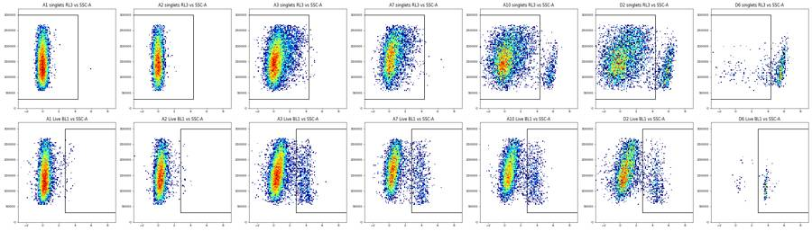
94
tool call · Write
{
"file_path": "/task/outputs/notes.md",
"content": "# Caspase-3/7 + Zombie NIR plate (20-Mar-2023): gating notes\n\n## Gates\nOne GatingML set (`gates.xml`), raw uncompensated linear values, no transforms, applied unchanged to all 30 wells.\n- **Cells** (FSC-A \u00d7 SSC-A, EllipsoidGate): centre (185 000, 162 000), semi-axes 132 000 \u00d7 55 000, tilted 50\u00b0. It encloses the distinct diagonal cloud at FSC-A \u2248 100\u2013300k. It excludes the low-FSC column (FSC-A < ~90k: debris, which back-gates to CellEvent-stained fragments and Zombie-bright material) and the high-SSC smear (13\u201340 % of all events sit at the SSC-A scale maximum in every well). Cells is therefore only 2\u201314 % of events.\n- **Single_Cells** (SSC-H \u00d7 SSC-A, 4-vertex PolygonGate): diagonal band with SSC-A/SSC-H between 0.85 and 1.40\u20131.47 (singlet ratio median 1.16); keeps 76\u201395 % of Cells.\n- **Live** (RL3-A \u00d7 SSC-A rectangle): RL3-A \u221210 000 to 6 000. Unstained A1/C1 singlets end at RL3-A \u2248 340 (99.9th pct). Stained wells have a Zombie-dim tail to ~5 000 and a separate bright peak at ~22 000 (treated wells A10, B1\u2013B4, C10\u2013D4). The upper edge is at the valley between them (pooled minimum 5 500\u20136 500). The lower edge only drops events at the scale floor.\n- **Caspase_pos** (BL1-A \u00d7 SSC-A rectangle): BL1-A 1 200 to 1 000 000. Set from A1/C1 and A2/C2: 99.5th pct of their Live events is 350\u20131 160, giving 0.04\u20130.46 % positive. It coincides with the valley (\u2248 900\u20131 200) between the negative peak (~80) and the CellEvent-bright peak (~3 500) in stained wells.\n- SSC-A limits on both rectangles are 30 000\u2013300 000: wider than the Cells ellipse (55 000\u2013269 000), so no gated cell is lost and scale-extreme events cannot enter.\n\n## Quality control\nEach well was judged on four things; 14 of 30 are flagged (`flags.csv`).\n- **Controls behave as labelled.** A2/C2 (Zombie-only) have no RL3-A signal and match unstained wells (`bad_control`, high). A3/C3 (caspase-only) carry RL3-A signal like the double-stained NT wells (10.5 % / 16.3 % of events > 6 000 vs 0.4\u20130.5 % unstained), so they are not a Zombie-negative reference (`bad_control`, medium). A2/C2 were still valid as BL1-A negatives; the RL3-A boundary was set without A3/C3.\n- **Event counts.** Flagged if total events < 20 000, Cells < 1 000 or Live < 100: B6, D5, B3, B5 (`too_few_events`).\n- **Flow over Time.** Event rate in 0.25-s bins against a 5-s rolling median; a stall is < 25 % of local rate. Flagged if stalls total \u2265 1.5 s or \u2265 9 % of events lie in disturbed bins (< 0.5\u00d7 or > 1.75\u00d7): D3 (9 stalls, 18.8 %), C10, C11, D6, B1 (`clog_or_interrupted_flow`). These flags are conservative: Live % and Caspase_pos % in stable versus disturbed bins differ by \u2264 2.5 points in every flagged well except D6, where the disturbed-bin value rests on about 16 Live events.\n- **Replicate agreement.** D4 is flagged `mislabeled_or_unexpected` (low): Live 25 % vs 79 % in D3; it resembles the unrecorded wells.\n- **Not flagged, but worth knowing.**\n - D1 (3 stalls, 1.0 s, 4.8 %) and C9 are just under the flow threshold.\n - In C2, C5, C7, C9, D1, D2 and D4 the rate falls to 23\u201346 % of baseline in the last 1.5 s (sample nearly exhausted); this is \u2264 1.5 % of events, so no well is called `ran_dry`.\n - No fluorescence saturation: BL1-A \u2264 0.01 %, RL3-A \u2264 1.05 % of events at scale maximum.\n - A5 (WT vehicle) has 6.1 % Zombie-bright singlets vs 0.2 % in NT A7.\n - Unrecorded wells are almost all Zombie-bright; D6 passes the count rule with only 176 Live events.\n\n## Deviations from the strategy\n- The `Live` boundary uses A1/C1 (and A2/C2, which are effectively unstained) plus the bimodal treated wells; A3/C3 were not used as the Zombie-negative reference because they contain RL3-A-bright events.\n- \"Zombie NIR-negative\" is taken as below the dim/bright valley (6 000), not below the unstained limit (~340), because stained live cells carry a dim tail.\n- No other departures: shapes, channels, hierarchy and the single shared gate set follow `gating_strategy.md`.\n"
}95
tool output
File created successfully at: /task/outputs/notes.md (file state is current in your context — no need to Read it back)
96
tool call · Bash
cd /task/work; cat > validate.py <<'EOF'
import flowkit as fk, pandas as pd, numpy as np
lay=pd.read_csv('/task/inputs/plate_layout.csv')
gs=fk.parse_gating_xml('/task/outputs/gates.xml'); print(gs.get_gate_ids())
c=pd.read_csv('/task/outputs/counts.csv'); f=pd.read_csv('/task/outputs/flags.csv')
print(c.shape, list(c.columns), f.shape, list(f.columns))
assert len(c)==120 and len(f)==30 and set(c.file)==set(lay.file)==set(f.file)
par={'Cells':'all_events','Single_Cells':'Cells','Live':'Single_Cells','Caspase_pos':'Live'}
bad=0
for fn in lay.file:
s=fk.Sample('/task/inputs/raw/'+fn); r=gs.gate_sample(s)
n={'all_events':s.event_count}
for p in par: n[p]=int(r.get_gate_membership(p).sum()); assert r.get_gate_membership(p).sum()==r.get_gate_count(p)
for p in par:
row=c[(c.file==fn)&(c.population==p)].iloc[0]
if row['count']!=n[p] or row.parent_population!=par[p] or abs(row.pct_of_parent-100*n[p]/n[par[p]])>1e-3: bad+=1
# hierarchy: child subset of parent
assert (r.get_gate_membership('Caspase_pos')<=r.get_gate_membership('Live')).all() and (r.get_gate_membership('Live')<=r.get_gate_membership('Single_Cells')).all() and (r.get_gate_membership('Single_Cells')<=r.get_gate_membership('Cells')).all()
print('count mismatches',bad)
assert ((f.usable=='yes')==(f.reason_category=='ok')).all()
assert f[f.usable=='no'].evidence.str.contains('confidence=(?:high|medium|low)').all()
print(f[['well','usable','reason_category']].to_string())
print(c.head(5).to_string())
import re; t=open('/task/outputs/notes.md').read(); print(len(t.split()),'words', re.findall(r'^## .*',t,flags=re.M))
EOF
python validate.py; ls -la /task/outputs97
tool output
[('Cells', ('root',)), ('Single_Cells', ('root', 'Cells')), ('Live', ('root', 'Cells', 'Single_Cells')), ('Caspase_pos', ('root', 'Cells', 'Single_Cells', 'Live'))]
(120, 6) ['file', 'well', 'population', 'count', 'parent_population', 'pct_of_parent'] (30, 5) ['file', 'well', 'usable', 'reason_category', 'evidence']
count mismatches 0
well usable reason_category
0 A1 yes ok
1 A2 no bad_control
2 A3 no bad_control
3 A5 yes ok
4 A7 yes ok
5 A8 yes ok
6 A9 yes ok
7 A10 yes ok
8 A11 yes ok
9 B1 no clog_or_interrupted_flow
10 B2 yes ok
11 B3 no too_few_events
12 B4 yes ok
13 B5 no too_few_events
14 B6 no too_few_events
15 C1 yes ok
16 C2 no bad_control
17 C3 no bad_control
18 C5 yes ok
19 C7 yes ok
20 C8 yes ok
21 C9 yes ok
22 C10 no clog_or_interrupted_flow
23 C11 no clog_or_interrupted_flow
24 D1 yes ok
25 D2 yes ok
26 D3 no clog_or_interrupted_flow
27 D4 no mislabeled_or_unexpected
28 D5 no too_few_events
29 D6 no clog_or_interrupted_flow
file well population count parent_population pct_of_parent
0 Caspase_primaryneurons_caspase_Group_A1.fcs A1 Cells 9361 all_events 10.3264
1 Caspase_primaryneurons_caspase_Group_A1.fcs A1 Single_Cells 8561 Cells 91.4539
2 Caspase_primaryneurons_caspase_Group_A1.fcs A1 Live 8560 Single_Cells 99.9883
3 Caspase_primaryneurons_caspase_Group_A1.fcs A1 Caspase_pos 39 Live 0.4556
4 Caspase_primaryneurons_caspase_Group_A2.fcs A2 Cells 6941 all_events 8.5683
673 words ['## Gates', '## Quality control', '## Deviations from the strategy']
total 44
drwxr-xr-x 2 root root 4096 Nov 10 19:23 .
drwxr-xr-x 5 root root 4096 Nov 10 19:13 ..
-rw-r--r-- 1 root root 9334 Nov 10 19:18 counts.csv
-rw-r--r-- 1 root root 12766 Nov 10 19:23 flags.csv
-rw-r--r-- 1 root root 3140 Nov 10 19:18 gates.xml
-rw-r--r-- 1 root root 3987 Nov 10 19:23 notes.md99
tool call · Bash
cd /task/work; python - <<'EOF'
from load import *; import pickle
D=load(); memb=pickle.load(open('memb.pkl','rb'))
BW=0.25
for w in ['D6','B1','C10','C11','D3']:
t=D[w]['Time'].values; T=t.max()
edges=np.arange(0,np.ceil(T/BW)*BW+1e-9,BW); h,_=np.histogram(t,bins=edges)
cm=(edges[:-1]>=1)&(edges[1:]<=T-2)
base=pd.Series(h.astype(float)).rolling(21,center=True,min_periods=5).median().values
r=h/np.maximum(base,1); dist=((r<0.5)|(r>1.75))&cm
ev=dist[np.clip(np.digitize(t,edges)-1,0,len(h)-1)]
print(w,'Live in disturbed',(memb[(w,'Live')]&ev).sum(),'casp',(memb[(w,'Caspase_pos')]&ev).sum())
EOF100
tool output
D6 Live in disturbed 16 casp 11 B1 Live in disturbed 214 casp 20 C10 Live in disturbed 500 casp 56 C11 Live in disturbed 318 casp 59 D3 Live in disturbed 723 casp 70
101
tool call · Write
{
"file_path": "/task/outputs/notes.md",
"content": "# Caspase-3/7 + Zombie NIR plate (20-Mar-2023): gating notes\n\n## Gates\nOne GatingML set (`gates.xml`), raw uncompensated linear values, no transforms, applied unchanged to all 30 wells.\n- **Cells** (FSC-A \u00d7 SSC-A, EllipsoidGate): centre (185 000, 162 000), semi-axes 132 000 \u00d7 55 000, tilted 50\u00b0. It encloses the distinct diagonal cloud at FSC-A \u2248 100\u2013300k and excludes the low-FSC debris column (FSC-A < ~90k) and the high-SSC smear (13\u201340 % of all events sit at the SSC-A scale maximum in every well). Cells is therefore only 2\u201314 % of events.\n- **Single_Cells** (SSC-H \u00d7 SSC-A, 4-vertex PolygonGate): diagonal band with SSC-A/SSC-H between 0.85 and 1.40\u20131.47 (singlet median 1.16); keeps 76\u201395 % of Cells.\n- **Live** (RL3-A \u00d7 SSC-A rectangle): RL3-A \u221210 000 to 6 000. Unstained A1/C1 singlets end at RL3-A \u2248 340 (99.9th pct). Stained wells have a Zombie-dim tail to ~5 000 and a separate bright peak at ~22 000 (treated wells A10, B1\u2013B4, C10\u2013D4). The upper edge is the valley between them (pooled minimum 5 500\u20136 500). The lower edge only drops events at the scale floor.\n- **Caspase_pos** (BL1-A \u00d7 SSC-A rectangle): BL1-A 1 200 to 1 000 000. Set from A1/C1 and A2/C2: the 99.5th pct of their Live events is 350\u20131 160, giving 0.04\u20130.46 % positive. It coincides with the valley (\u2248 900\u20131 200) between the negative peak (~80) and the CellEvent-bright peak (~3 500) in stained wells.\n- SSC-A limits on both rectangles are 30 000\u2013300 000: wider than the Cells ellipse (55 000\u2013269 000), so no gated cell is lost and scale-extreme events cannot enter.\n\n## Quality control\nEach well was judged on four things; 14 of 30 are flagged (`flags.csv`).\n- **Controls behave as labelled.** A2/C2 (Zombie-only) have no RL3-A signal and match the unstained wells (`bad_control`, high). A3/C3 (caspase-only) carry RL3-A signal like the double-stained NT wells (10.5 % / 16.3 % of events > 6 000 vs 0.4\u20130.5 % unstained), so they are not a Zombie-negative reference (`bad_control`, medium).\n- **Event counts.** Flagged if total events < 20 000, Cells < 1 000 or Live < 100: B6, D5, B3, B5 (`too_few_events`).\n- **Flow over Time.** Event rate in 0.25-s bins against a 5-s rolling median; a stall is < 25 % of local rate. Flagged if stalls total \u2265 1.5 s or \u2265 9 % of events lie in disturbed bins (< 0.5\u00d7 or > 1.75\u00d7): D3 (9 stalls, 18.8 %), C10, C11, D6, B1 (`clog_or_interrupted_flow`). These flags are conservative: Live % and Caspase_pos % in stable versus disturbed bins differ by \u2264 2.5 points in each of them except D6, whose disturbed bins hold only 16 Live events.\n- **Replicate agreement.** D4 is flagged `mislabeled_or_unexpected` (low): Live 25 % vs 79 % in D3; it resembles the unrecorded wells.\n- **Not flagged, but worth knowing.**\n - D1 (3 stalls, 1.0 s, 4.8 %) and C9 are just under the flow threshold.\n - In ten wells (worst: C5, C9, D2, D4) the rate falls to 23\u201348 % of baseline in the last 1.5 s as the sample runs out; this is \u2264 1.6 % of events, so no well is called `ran_dry`.\n - No fluorescence saturation: BL1-A \u2264 0.01 %, RL3-A \u2264 1.05 % of events at scale maximum.\n - A5 (WT vehicle) has 6.1 % Zombie-bright singlets vs 0.2 % in NT A7.\n - Unrecorded wells are almost all Zombie-bright; D6 passes the count rule with only 176 Live events.\n\n## Deviations from the strategy\n- The `Live` boundary was set from A1/C1 (and A2/C2, effectively unstained) plus the bimodal treated wells; A3/C3 were not used as the Zombie-negative reference because they contain RL3-A-bright events.\n- \"Zombie NIR-negative\" is taken as below the dim/bright valley (6 000), not below the unstained limit (~340), because stained live cells carry a dim tail.\n- No other departures: shapes, channels, hierarchy and the single shared gate set follow `gating_strategy.md`.\n"
}102
tool output
The file /task/outputs/notes.md has been updated successfully. (file state is current in your context — no need to Read it back)
103
tool call · Bash
cd /task/work; python validate.py | tail -1; wc -w /task/outputs/notes.md; python - <<'EOF'
import pandas as pd
c=pd.read_csv('/task/outputs/counts.csv')
p=c.pivot(index='well',columns='population',values='pct_of_parent')
print(p.loc[['A5','A7','A8','A9','A10','A11','B1','B2','B4','C5','C7','C8','C9','D1','D2'],['Live','Caspase_pos']].round(1).T.to_string())
EOF104
tool output
650 words ['## Gates', '## Quality control', '## Deviations from the strategy'] 650 /task/outputs/notes.md well A5 A7 A8 A9 A10 A11 B1 B2 B4 C5 C7 C8 C9 D1 D2 population Live 93.9 99.8 98.8 99.1 93.4 97.0 88.1 91.9 90.9 98.7 99.8 98.7 99.0 86.6 84.5 Caspase_pos 8.6 11.7 16.4 17.4 10.5 10.9 9.4 8.2 8.8 9.7 12.7 24.2 19.4 11.1 10.8
105
agent
All 30 wells are gated and the four deliverables are written; `gates.xml` reloads with `parse_gating_xml`, and `counts.csv` matches what the saved gates give on every file. I flagged 14 of 30 wells as not usable, which is a lot, and several of those calls are judgement rather than clear-cut.
## Gates
All gates are on raw linear values with no transforms.
| Population | Gate | Placement |
|---|---|---|
| `Cells` | ellipse, FSC-A × SSC-A | around the distinct cell cloud at FSC-A ≈ 100–300k; excludes low-FSC debris and the high-SSC smear |
| `Single_Cells` | 4-vertex polygon, SSC-H × SSC-A | SSC-A/SSC-H between 0.85 and about 1.4 |
| `Live` | rectangle, RL3-A −10,000 to 6,000 | upper edge at the valley between Zombie-dim and Zombie-bright cells |
| `Caspase_pos` | rectangle, BL1-A 1,200 to 1,000,000 | above the unstained and Zombie-only wells (0.04–0.46 % positive), at the valley in stained wells |
`Cells` is only 2–14 % of events in every well, because most events are debris or sit at the SSC-A scale maximum (13–40 % of events per well).
## Flagged wells
- **A2, C2 (`bad_control`, high confidence):** the Zombie-only controls show no Zombie signal and are indistinguishable from the unstained wells.
- **A3, C3 (`bad_control`, medium):** the caspase-only controls carry RL3-A signal like double-stained wells (10.5 % and 16.3 % of events above 6,000, against about 0.4–0.5 % unstained). I did not use them to set the `Live` boundary.
- **B6, D5 (`too_few_events`, high), B3, B5 (medium):** the rule was total events under 20,000, `Cells` under 1,000, or `Live` under 100. B6 has 8,004 events and 67 live cells; B5 and D5 have about 50 live cells each.
- **D3 (`clog_or_interrupted_flow`, high), C10, C11, D6 (medium), B1 (low):** repeated stalls and surges in event rate. D3 is the worst, with 9 stalls and 18.8 % of events in disturbed time bins.
- **D4 (`mislabeled_or_unexpected`, low):** 25 % live against 79 % in its replicate D3; it looks like the unrecorded wells rather than its labelled condition.
The flow flags are conservative. In each flagged flow well except D6, `Live` % and `Caspase_pos` % differ by at most 2.5 points between stable and disturbed periods. If you would rather keep those wells, the counts are already in `counts.csv`.
## Not flagged
- **End-of-run tail-off:** in ten wells the event rate drops to 23–48 % of baseline in the last 1.5 s as the sample runs out. That is at most 1.6 % of events, so I called no well `ran_dry`.
- **D1 and C9:** these sit just under the flow threshold.
- **A5 (WT vehicle):** 6.1 % Zombie-bright singlets against 0.2 % in the untreated well A7.
- **Unrecorded wells:** B5, B6, D5 and D6 are almost entirely Zombie-bright; D6 passes the count rule with only 176 live cells.
## Deviations from the strategy
I took "Zombie-negative" as below the dim/bright valley (6,000) rather than below the unstained limit (about 340), because stained live cells carry a dim tail. Together with not using A3/C3 as the Zombie-negative reference, this is the only departure from `gating_strategy.md`; both are recorded in `notes.md`.
Files are in `/task/outputs/`:
- `gates.xml`
- `counts.csv`
- `flags.csv`
- `notes.md`
final result
All 30 wells are gated and the four deliverables are written; `gates.xml` reloads with `parse_gating_xml`, and `counts.csv` matches what the saved gates give on every file. I flagged 14 of 30 wells as not usable, which is a lot, and several of those calls are judgement rather than clear-cut. ## Gates All gates are on raw linear values with no transforms. | Population | Gate | Placement | |---|---|---| | `Cells` | ellipse, FSC-A × SSC-A | around the distinct cell cloud at FSC-A ≈ 100–300k; excludes low-FSC debris and the high-SSC smear | | `Single_Cells` | 4-vertex polygon, SSC-H × SSC-A | SSC-A/SSC-H between 0.85 and about 1.4 | | `Live` | rectangle, RL3-A −10,000 to 6,000 | upper edge at the valley between Zombie-dim and Zombie-bright cells | | `Caspase_pos` | rectangle, BL1-A 1,200 to 1,000,000 | above the unstained and Zombie-only wells (0.04–0.46 % positive), at the valley in stained wells | `Cells` is only 2–14 % of events in every well, because most events are debris or sit at the SSC-A scale maximum (13–40 % of events per well). ## Flagged wells - **A2, C2 (`bad_control`, high confidence):** the Zombie-only controls show no Zombie signal and are indistinguishable from the unstained wells. - **A3, C3 (`bad_control`, medium):** the caspase-only controls carry RL3-A signal like double-stained wells (10.5 % and 16.3 % of events above 6,000, against about 0.4–0.5 % unstained). I did not use them to set the `Live` boundary. - **B6, D5 (`too_few_events`, high), B3, B5 (medium):** the rule was total events under 20,000, `Cells` under 1,000, or `Live` under 100. B6 has 8,004 events and 67 live cells; B5 and D5 have about 50 live cells each. - **D3 (`clog_or_interrupted_flow`, high), C10, C11, D6 (medium), B1 (low):** repeated stalls and surges in event rate. D3 is the worst, with 9 stalls and 18.8 % of events in disturbed time bins. - **D4 (`mislabeled_or_unexpected`, low):** 25 % live against 79 % in its replicate D3; it looks like the unrecorded wells rather than its labelled condition. The flow flags are conservative. In each flagged flow well except D6, `Live` % and `Caspase_pos` % differ by at most 2.5 points between stable and disturbed periods. If you would rather keep those wells, the counts are already in `counts.csv`. ## Not flagged - **End-of-run tail-off:** in ten wells the event rate drops to 23–48 % of baseline in the last 1.5 s as the sample runs out. That is at most 1.6 % of events, so I called no well `ran_dry`. - **D1 and C9:** these sit just under the flow threshold. - **A5 (WT vehicle):** 6.1 % Zombie-bright singlets against 0.2 % in the untreated well A7. - **Unrecorded wells:** B5, B6, D5 and D6 are almost entirely Zombie-bright; D6 passes the count rule with only 176 live cells. ## Deviations from the strategy I took "Zombie-negative" as below the dim/bright valley (6,000) rather than below the unstained limit (about 340), because stained live cells carry a dim tail. Together with not using A3/C3 as the Zombie-negative reference, this is the only departure from `gating_strategy.md`; both are recorded in `notes.md`. Files are in `/task/outputs/`: - `gates.xml` - `counts.csv` - `flags.csv` - `notes.md`